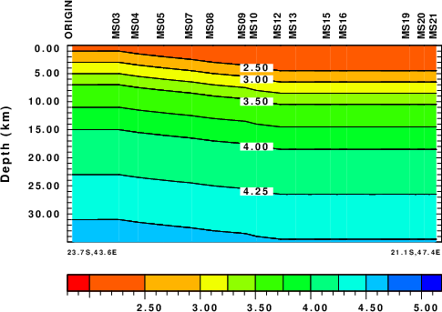
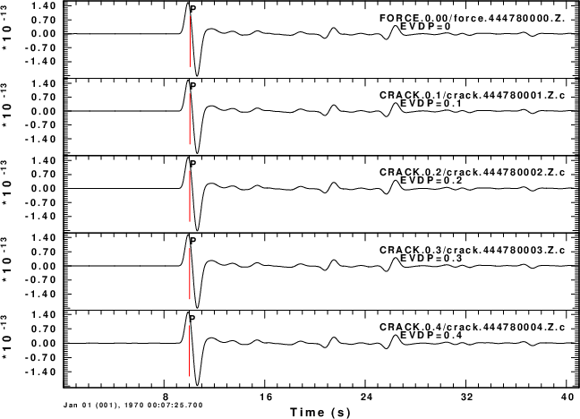
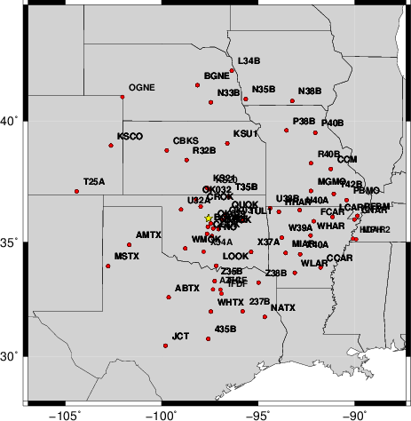
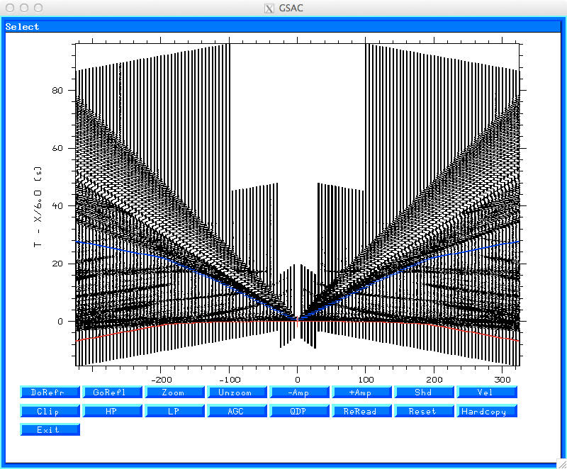

|
With the -XDOWN flag |
Without the -XDOWN flag |
The purpose of this page is to notify users of the Computer Program in Seismology (CPS) package of repairs or extensions made to the code. Whenever this page is updated, the down-loadable version of CPS is updated and provided to users.
2005, 2006, 2007, 2008, 2009, 2010, 2011, 2012, 2013, 2014, 2015, 2016, 2017, 2018, 2019, 2020, 2021, 2022, 2023, 2024, 2025, 2026
For each year, the changes are (listed in order from newest to
oldest)
tv = (float)(gsac_control.cutepoch[i]-tzref);
tv = (float)(gsac_control.cutepoch[i]-tzref-newsachdr.rhdr[H_B]);
ch O -12345 or ch KT0 -12345
void proc(j)with
int j ;
{
void proc(int j)to be compatible with modern C standards. The problematic syntax occurred in three source files:
{
rltty.c:83:1: warning: a function definition without a prototype is deprecated in all versions of C and is
not supported in C2x [-Wdeprecated-non-prototype]
set_winsize (tty)
^
1 warning generated.
bind.c:1170:1: warning: a function definition without a prototype is deprecated in all versions of C and is
not supported in C2x [-Wdeprecated-non-prototype]
parse_comparison_op (s, indp)
^
1 warning generated.
text.c:1767:1: warning: a function definition without a prototype is deprecated in all versions of C and is
not supported in C2x [-Wdeprecated-non-prototype]
_rl_char_search_callback (data)
^
1 warning generated.
July 30, 2024
if (i.ne.1) then Cw00 = cphase(i-1) ... endif
to
if (i.gt.1) then
Cw00 = cphase(i-1)
...
endif
if (i.ne.1) then c3=eroot(i-1)-0.05*dk0 ... endif
to
if (i.gt.1) then c3=eroot(i-1)-0.05*dk0 ...
if(i.ne.1 .and. c1.ge.eroot(i-1)) then
c2=c22
tadd=-dabs(tadd)
c write(LOT,*)'catch a reverse dispersion tadd=',tadd
if(c2.eq.c22) go to 550
endif
The major problem here is that it seemed as if the old
compilers evaluated the i.ne.1 first and if this failed,
then the c1.gt.eroor(i-1). The current compilers seem to
evaluate the i.ne.1 and c1.ge.eroot(i-1) is parallel. If
the i==1 then the second has an invalid memory reference
at eroot(0). In addition it is assume that i != 0.
The solution is to replace the compound "if" statement by
two "if" statements.
if(i.gt.1)then
if(c1.ge.eroot(i-1))then
c2=c22
tadd=-dabs(tadd)
c write(LOT,*)'catch a reverse dispersion tadd=',tadd
if(c2.eq.c22) go to 550
endif
endif
if(i.gt.1.and.c2.gt.eroot(i-1)) c2=eroot(i-1)-0.01*dk0
to
if(i.gt.1)then
if(c2.gt.eroot(i-1))then
c2=eroot(i-1)-0.01*dk0
endif
endif
c-----
c solid layer solve halfspace period equation
c-----
cmin = betmn
call gtsolh(a(jmn),b(jmn),cmin)
cmin=.95*cmin
cmax = betmx
endif
to
c solid layer solve halfspace period equation
c-----
cmin = betmn
call gtsolh(a(jmn),b(jmn),cmin)
cmin=.95*cmin
cmax = betmx
c-----
c RBH 2024/07/28 ensure that betmx is
c not less than the halfspace S velocity for elastic
c-----
if(betmx.gt.b(mmax))then
betmx = b(mmax)
cmax = betmx
endif
endif
Created a new program sacampl to compute the quarter-wavelength site response. This is documented n the tutorial SACAMPL
The sync/synchronize command has an option to synchronize on the end of the file, e.g.,
GSAC> sync eThis was needed for code testing. The Sac header defines a reference time, and then offsets to that time in the B, E, O, A, T1, ...,T9 headers. To set a travel time, it is simplest to set the reference time to the origin time (of course the origin time must already have been set) and then set the arrival time marker to the travel time, for example as as in
GSAC> sync o GSAC> ch A 25.0If this is to be done within a SHELL script, one would do something like
P_traveltime=25.0
gsac << EOF
sync o
ch A ${P_traveltime}
wh
q
EOF
int evr_regexec (prog, string, log) register regexp *prog;
register char *string;
evalresp_logger *log;
{
code
}
Modern C wants
/* prototype */
static void regoptail (char *p, char *val, evalresp_logger *log);
...
/* actual procdure */
static void regoptail (char *p, char *val, evalresp_logger *log){
code
}
The compiler complaint here was that the evalresp-4.0.6
code was a mixture of the two styles
/* prototype */
static void regoptail (char *p, char *val, evalresp_logger *log);
...
/* actual procdure */
int evr_regexec (prog, string, log) register regexp *prog;
register char *string;
evalresp_logger *log;
{
code
}
The underlying CODE was not changed in the SLU,
version. Just the procedure description was rewritten.
139 | sprintf(m.evtime,"%2.2d:%2.2d:%2.2d:%1.1d",hour,minute,second,(int)((millisecond%1000)/100));
167 | sprintf(n.evtime,"%2.2d:%2.2d:%2.2d.%1.1d",hour,minute,second,millisecond/100);
211 | sprintf(n.timestamp,"S-%4.4d%2.2d%2.2d%2.2d%2.2d%2.2d",
1900+gmt->tm_year,1+gmt->tm_mon,gmt->tm_mday,gmt->tm_hour,gmt->tm_min,gmt->tm_sec);
The reason for the warning was the possibility of overflow
of the m.evtime, n.evtime and n.timestamp
strings. Buffer overflow has often been used to break into
comptuer systems. These structure elements are defined in
the files msg.h and ndk.h. The solution is
some ugly code that ensires that the arguments of the sprintf
statements are positive integers of the same maximum
length:
sprintf(m.evtime,"%2.2d:%2.2d:%2.2d:%1.1d",hour,minute,second,abs(((int)((millisecond%1000)/100))%10));
...
sprintf(n.evtime,"%2.2d:%2.2d:%2.2d.%1.1d",hour,minute,second,abs(((int)millisecond/100)%10));
...
sprintf(n.timestamp,"S-%4.4d%2.2d%2.2d%2.2d%2.2d%2.2d",
abs(1900+gmt->tm_year)%9999,abs(1+gmt->tm_mon)%100,abs(gmt->tm_mday)%100,abs(gmt->tm_hour)%100,abs(gmt->tm_min)%100,abs(gmt->tm_sec)%100);
Added extra comments to tdpder96 of VOLIII to indicate that one of the partials is with respect to η where η=F/(A-2L) in terms of the TI material parameters.
Added -XN xnumscl -YN ynumscl to pltsac to increase the size of the axis labels. The default is 0.07 (e.g., 70 CALPLOT units). With this option the size will be xnumscl*0.07 or ynumscl*0.7.
hudson96 was completely rewritten because of a need to document the method in detail. The result is cleaner code. In addition a correction was made for the T* time shift. Other than this slight difference, the output is the same as tha given by the previous version.
Finally applied a spell check to the online help for gsac
Added -XN xnumscl -YN ynumscl to the GSAC pctl command. The default size of the axis labels is 0.10 (e.g., 100 CALPLOT units). With this option then will be xnumscl * 0.10 or ynumscl * 0.10 . This was added to improve the presentation of figures for publication.
Updated the documentation for the SLAT2D
Created the SLAT2Dgrad tutorial which compares multimode synthetics created using slat2d96 to Cerveny high frequency asymptotic ray tracing for a single dipping layer structure. The SH comparison is superb, while the P-SV comparison suffers from the fact that the ray theory cannot model the Rayleigh wave. The comparison gives confidence to the slat2d96 approach.
Updated the installation instructions for a Mac computer, in this case an M2 Macbook Air. The updated page is eqccps.html. In using this page, please provide comments so that the installation steps can be improved. Of note was the observations that the Imagemagick 7.1.1-8 package downloaded from Homebrew could not handle a PostScript BoundingBox at the end of the file while the ImageMagick 6.9.11-60 downloaded using MacPorts worked well.
Updated VOLV/src/tshwmod96.f to create the plot file TSHWMOD96.PLT instead of SHWMOD96.PLT to distinguish the output
VOLIII/src/spulse96.f: corrected the synthetics for laterally varying media, e.g., after running slat96. The description in Keilis-Borok's book is not too clear. Hoperfully this is correct.
The fileid command in gsac now permits a listing of the magnitude
The Makefiles in VOLVI were not correct since they did not refer to gtrofa.o for the compiles of surf96, rftn96 and joint96.
VOLV/src/refmod96.f: changed the plot width for reflections.
CALPLOT/Utility/calplt.f: added the -h flag to just show the usage
CALPLOT/Utility/genplt.f: changed one instance of sizey = 0.15 top sizey = 0.12 to agree with X-axis
VOLV/src/f96tosac.f: changes 12 format from i7.7 to i8.8
Created a tutorial on compliance which includes the source code for compliance.saito and sample runs for the solid-atmosphere and ocean bottom observations. Following Tanimoto and Wang (2019), depth dependent partial derivative kernels are provided.
The previous distributions did not contain the modifications made on July 22, 2022 that add the option to use the Brocher relations to given density and P-velocity from the S-velocity. This correction will be incorporated into the next release.
Change the name of the CALPLOT graphics file in tshwmod96.f from SHWMOD96.PLT to TSHWMOD967.PLT
VOLV/src/f96tosac.f - change format statement 12 from i7.7 to i8.8 so it now reads as 12 format(i8.8,'_',i6.6,'_',i6.6,'.',a3)
Corrected y-axis font in CALPLOT/Utilities/genplt.f to agree with x-axis font by changing one instance of sizey = 0.15 to sizey = 0.12
The current release is NP330.Nov-08-2022.tgz
Recently the version of sac distributed by IRIS has been has been updated by introducing support for NVHDR=7 in addition to continuing to support NVHDR=6. The difference is the appending a double precision set of timing variables following the waveform section. The Sac file format is described at http://ds.iris.edu/files/sac-manual/manual/file_format.html In order to provide support for this new format, SUBS/sacsubc.c and VOLVIII/src/saccvt.c and VOLVIII/src/saclhdr.c were updated. In addition asctosac.f, sactoasc.f and shwsac.f in VOLVIII/src were replaced by asctosac.c, sactoasc.c and shwsac.c, respectively. NOTE SUBS/sacsubf.f was not updated because making the changes in FORTRAN is harder and the use of these FORTRAN subroutines in the CPS codes does not require the extra precision in the timing variables.
The addition to SUBS/sacsubc.c and SUBS/sacsubc.h is the procedure getdhv(char *strcmd,double *dval,int *nerr) and void setdhv(char *strcmd, double dval, int *nerr). These are analogous to setfhv and getfhv, but address the double precision header at the end of the Sac file for NVHDR=7.
The byte-swapping program saccvt was updated to handle Sac files with NVDR=7. It will reject a conversion if NVHDR is not equal to either 6 or 7, and if equal will require that at least one Integer Header Value be -12345 and that there be no integers < -99999. The invocation saccvt -I < in.sac > out.sac will perform a byte swap if required (-I means intelligent). Without this flag a conversion always occurs.
Thus the upgraded codes are gsac, saccvt, ssclhdr, asctosac, sactosac and shwsac.
A discussion of the codes used to create files that test the NVHDR=7 value is given in GSACNVHDR.
To support a study of P-wave receiver functions above a subducting slab, the VOLIX codes cprep96 cseis96 and cpulse96 were modified by changing format statements to support greater source depths and horizontal offsets. In additikon the ray path computations in cseis96 were changed from single to double precision to support the greater depths. cseis96 is essentially the Cerveny seis81 code which was developed to support the interpretation of refraction lines. It the source is placed very deep compared to the model thickness, then the incident P wavefront approximates the plane wave assumed for receiver function studies. To test the codes and to provide examples there is a tutorial on the use of Cerveny ray tracing for receiver function analysis.
As a result of a user request, prfmod96 was modified to display an optional velocity bar. An example of the modified output is given in the figure. Further discussion is given in PRFMOD/prfmod96.html. A representative plot is
|
 |
After reviewing a paper, a new option was added to surf96, rftn96 and joint96. Previously there were options to fix the P-velocity or to update the P-velocity using the Vp/Vs data of the initial model (default). In addition the density was computed from the P velocity. The update is to use equation (9) of Brocher (2005) to compute Vp from the updated Vs and to compute density from equation (1) of that paper. In addition the computation of density was augmented by rough values of PREM for use when 8.5 < Vp < 12. Reference: Brocher,, T.M. (2005). Empirical relations between elastic wave speed and density in the Earth's crust, Bull. Seism.Soc.Am, 95, 2081-2092.
The current release is NP330.Jun-09-2022.tgz
Modified mtinfo to remove redundant output.
To avoid some problems when using velocity models with meter-kg/m3 instead of kilometer and gm/cm3 statements such as if(t1 .le. 1.0d-20)cvt(j) = 0.0d+00 were replaced by if(t1 .le. 1.0d-35)cvt(j) = 0.0d+00 in spulse96, spulse96strain and tpulse96. In addition the precision checks were changed in sprep96, sdisp96, sregn96, slegn96, tprep96, tdisp96, tregn96 and tlegn96. In addition output formats for the -TXT and -ASC output of sdpegn96, sdpder96, sdpsrf96, tdpegn96, tdpder96 and tdpsrf96 so that output would work for all possible model formats. Thus the codes are more robust. IT is recommended that the km, km/s and gm/cm3 be used. The purpose of the exercise of using different units was to understand the units of the final synthetics.
tregn96 previously worked for a solid TI model. The inclusion of a fluid layer at the surface was not implemented correctly. Thus the eigenfunctions and synthetics were not correct. This has been fixed.
gsac – modified the routines gsac_env.c, gs c_plotsp.c, gsac_psppk.c, gsac_whit.c and gsac_writesp.c avoid underflow. As an example, in gsac_plotsp.c the following change was made:
From float tr, ti; ... temp = sqrt(tr*tr + ti*ti); To double tr, ti; ... temp = (float)sqrt(tr*tr + ti*ti);
The problem was that some spectra that should have been non-zero, e.g., tr and ti = 1.0e-20, were set to zero because of the multiplication inside the square root, even thought the square root is a double.
The current release is NP330.Mar-09-2022.tgz
To avoid problems with two programs using a file with the same name, hspec96strain, tspec96strain and hpulse96strain use the binary file hspec96ss.grn while hspec96 and hpulse96 continue to use the binary file hspec96.grn. The reason for the difference is that hspec96 computes the Green’s functions but the strain codes also compute the partial derivatives of the Green’s functions with respect to receiver coordinates.
spulse96strain did not correctly define the moment tensor. Thus output did not agree with that of hpulse96strain.
hspec96, tspec96, hspec96p and tspec96p were slightly changed as follows. If the source is in a fluid, do not compute an S time through the fluid, e.g., an S→P time. Change the screen out put to use a “g” format which is useful for high frequencies and short distances. Also pass this precision to subsequent codes.
sdisp96 - Phase velocity search limits can be defined using the flags -cmin cmin -cmax cmax or -CMIN cmin -CMAX cmax.
hspec96 tspec96 rspec96 tspec96strain hspec96strain – change the format that shows the frequencies computed so that very high frequencies can be displayed. The computations were not changed.
tspec96strain hspec96strain - if the source is in a fluid do not compute an S first arrival
hpulse96 – corrected the PEX PSS PDS etc Green’s functions for stress/traction in a fluid
hpulse96strain – distinguish between -Z (zero phase) and -ZZ (moment tensor component). Also use first arrival times from hspec96strain instead of computing them here.
gsac – in the fileid command, there was a problem in displaying the DEPMIN and DEPMAX header variables because the initial DE was interpreted as DEfault. Now to invoke the default presentation, one must use DEFault. Because of this all routines permitting a default reset of parameters must use DEFault!
gsac, do_mft and do_pom: On an older PC running LINUX, there was a problem in using the X11 Cursor in that there was a lag in presentation as the cursor moved. This was obvious for these codes (refr command under gsac) where a push-button menu was implemented in software. The modification was to replace the call gcursor(“Arrow”) by gcursor(“XORArrow”) to make the display more responsive.
mtsubs.f was modified to correctly define the isotropic moment to agree with Ben-Zion and Zhu paper for the implementation of the full moment tensor grid search program wvfmtgrd96.
Modified gsac_fileid.c of gsac. When the command GSAC> fileid list fname dist az baz concat on format colon was previously issued, the annotation in the plot window had a lot of blanks. Not there are not repeated blanks, which improves the presentation.
gsac routine refr had the display modified to include some white space on the edges of the trace plot to permit easier use with the “Zoom” command. Previously it was difficult to pick a region bear the edges.
The previous output from wvfmt96 and wvfmtd96 (PROGRAMS.330/VOLVII/src/wvfmt96.f and PROGRAMS.330/VOLVII/src/wvfmtd96.f) used to denote the best solution was not informative enough. The output has been changed. Because of this fmdfit (PROGRAMS.330/VOLV/src/fmdfit.f) were modified. The previous output of wvfmt96 for the best solution was
WVFMT96 1.0 288. 74. -91. 4.15 1.000 0.186E-12 1.000 1.000 0.154E-12 54.5
where the columns are
1 WVFMT96 if created by wvf96.f WVFMTD96 if created by wvfmtd96 The next four columns describe the best (major) double couple derived from the moment tensor 2 depth - depth of the Greens functions 3 stk - strike of best double couple 4 dip - dip of best double couple 5 rake - rake of best double couple 6 Mw - moment magnitude of best double couple 7 Reduction of Variance: 1.0-total_err/total_sum_sq - raw data 0 zero is best 8 Std Error of fit: sqrt(total_err*tmpsig) 9 xy/sqrt(xx*yy) - cosine of angle between observed and predicted 10 Weighted reduction of variance: 1.0-total_wtd/total_sum_sq_wt 11 Weighted Std error of fit: sqrt(total_wtd*tmpsig) 12 Percent CLVD - 0 means pure double couple
The new output is
WVFMT961 1.0 288. 74. -91. 4.15 1.000 0.186E-12 1.000 1.000 0.154E-12 54.5 -0.1010000E+23 -0.1060000E+23 0.3000003E+21 0.8799998E+22 0.2799999E+22 -0.2190001E+23
The program name in the first column changes and there are 6 additional columns
1 WVFMT961 if created by the updated wvf96.f WVFMTD961 if created by the updated wvfmtd96 Columns 2 - 12 are the 13 Mxx dyne-cm) 14 Myy (dyne-cm) 15 Mxy (dyne-cm) 16 Mxz (dyne-cm) 17 Myz (dyne-cm) 18 Mzz (dyne-cm)
A examination of CPS moment tensor code and documentation was initiated. The results will be updated documentation in PROGRAMS.330/DOC/SOURCE.pdf/cps330s.pdf, and new on-line tutorial for source inversion that focuses on using a synthetic data set. at mtinfo and fmplot programs. The lune diagram is discussed in many papers, such as Tape, W. and Tape, C. (2012). A geometric comparison of source-type plots for moment tensors, Geophys. J. Int. 190, 499-510.
mtinfo was modified in two was. First the printer plot in the msg.txt create by the program now has a representation of the lune to the right of the beachball plot. The second change is that the standard output of the program, named here as mtinfo.txt , gives the lune angles corresponding to the moment tensor at lines 37 and 38. These were created using the command
mtinfo -XX -2.29E+21 -XY -6.34E+20 -XZ 3.53E+21 -YY -1.56E+21 -YZ 2.11E+21 -ZZ -1.35E+22 > mtinfo.txt
fmplot was modified to now provide the CALPLOT graphics file LUNE.PLT in addition to the previously provided FMPLOT.PLT . The command
fmplot -st -XX -2.29E+21 -XY -6.34E+20 -XZ 3.53E+21 -YY -1.56E+21 -YZ 2.11E+21 -ZZ -1.35E+22 -FMPLMN -P
gives the following plots using the default equal area projection:
|
FMPLOT.PLT |
LUNE.PLT |
|
|
|
shwmod96 was modified by adding a -XY switch. The purpose is to create a file of depth-model parameter. If the model96 file name is Model.mod, then the x-y output file is named
Model.mod.VP.xy if the -P flag is used
Model.mod.VS.xy if the -S flag is used
Model.mod.DEN.xy if the -D flag is used
Model.mod.QPI.xy if the -QP flag is used to plot 1/Q
Model.mod.QSI.xy if the -QS flag is used to plot 1/QS
The reason for this option is that users may wish to use another program to plot the model parameters as a function of depth.
Examples of the plots created are given in SHWMOD96/index.html
The current release is NP330.Aug-31-2021.tgz
These codes have been compiled and tested using gcc/gfortran 10.2.0 and 11.1. Starting with gcc/gfortran 9.3.0 the compilers note problems that were ignored by previous versions. An example is that if two source files that are part of a larger program and an #include "local.h" and if the "local.h" had a declaration such as "int j;", then gcc would note that there were two global values of "j" and would then stop the compile. The solution is to remove the declaration "int j;" from the include file or to make careful if of "local" or "extern" attributes. The new compilers caught problems with some of the rdseed and gsac source files. I also noted that gfortran note the incorrect use of variables that were not defined.
On Manjaro LINUX, rdseed compiled in PROGRAMS.330/IRIS/rdseedv5.3.slu required a change in the Makefile in order to access the RPC code for XDR. After doing
./Setup LINUX6440
edit the PROGRAMS.330/IRIS/rdseedv5.3.slu/Makefile to modify the INCLUDE and LDFLAGS line as indicated here
[cps@cps-virtualbox rdseedv5.3.slu]$ diff Makefile Makefile.orig. 39c39 < INCLUDE = -I../Include -I/usr/include/tirpc --- > INCLUDE = -I../Include 46c46 < LDFLAGS = -lm -lc -ltirpc --- > LDFLAGS = -lm -lc
Now continue the compile with the command
./C &tt; C.txt 2>&1
The readline code was ugraded from readline-5.0 to readline-8.1. This library is used by gsac.
f96tosac was updated to permit additional naming of the Sac files, The old command line options were
f96tosac [-A] [-B] [-G] [-T] [-?] file_name
file_name Name of file96 file to be converted
If not given, input is stdin
-A SAC alphanumeric file, else binary
-B SAC binary (default)
-G Output names in form DDDDdHHHh.grn (binary)
-T Output names in form DDDDDdHHHh.grn(binary)
-E Output names in form DDDdddHhhh.grn(binary)
-? This online help
-h This online help
The new options permit the file name to also depend on the receiver depth. This is useful for VSP synthetics. The options are show below. Note that the output naming may not be good if a source or receiver depth is negative or if the field exceeds the available space. FORTRAN is not forgiving.
f96tosac [-A | -B | -G | -T | -E | -FMT ifmt ] [ -? | -h ] file_name
file_name Name of file96 file to be converted
If not given, input is stdin
OUTPUT FILE NAME
-A SAC alphanumeric file, else binary
-B SAC binary (default)
-G (default) Output names in form DDDDdHHHh.grn (binary)
-T Output names in form DDDDDdHHHh.grn(binary)
-E Output names in form DDDdddHhhh.grn(binary)
The format for the name of the binary output attempts to
give information on epicentral distance (km),
source depth (km), and receiver depth(km). The options are
-FMT 1 DDDDDd_HHHh_ZZZz.grn
e.g. 005001_1234_0045.Uz
-FMT 2 DDDDDddd_HHHhhh_ZZZzzz.grn
e.g. 00500123_123456_004578.ZVF
-FMT 3 DDDDDdHHHh.grn (same as -T)
e.g. 0050010041.ZVF
-FMT 4 DDDDdHHHh.grn (same as -G)
e.g. 050010045.ZVF
-FMT 5 DDDdddHhhh.grn (same as -E)
e.g. 5001234578.ZVF
where D is for epicentral distance, H source depth, and
Z receiver depth. The lower case indicates the digits
to the right of the decimal place. The examples above
are for an epicentral distance is 500.123 km, source
depth 123.456 km and receiver depth 4.578 km.
-? This online help
-h This online help
New codes are introduced to make synthetic stress, strain, dilatation and rotation time series. The theory of how this was accomplished is described in strain.pdf. There is also a tutorial at ../TUTORIAL/CPSstrain.
The hspec96 and wavenumber integration codes and the isotropic media modal superposition codes were adapted to create the new programs tspec96strain, hspec96strain and hpulse96strain to create strain, stress, rotation and dilation time series through wave number integration for a given moment tensor or point force source. The spulse96strain can create synthetics for isotropic media using modal superposition. As part of the upgrade the output files are in Sac binary form rather than the older file10 format. There are also more options to the naming of the output files. In addition srotate96 is used to rotate the strains, stresses or rotations to a different Cartesian coordinate system at the receiver.
The command line options of hspec96strain and are the same as for hspec96 and tspec96, respectively. The difference in the codes is that the strain versions output partial derivatives of the Green's functions with respect to source depth and epicentral distance.
The command line options are as follow:
USAGE: tspec96 [-H] [-A arg] [-K] [-SU] [-SD] [-SPUP] [-SSUP] [-SPDN] [-SSDN] [-RU] [-RD] [-RPUP] [-RSUP] [-RPDN] [-RSDN] [-?] [-h]
-H (default false) Use Hankel function not Bessel
-A arg (default arg=3.0) value of kr where Hn(kr) replaces
Jn(kr) in integration - only used when -H is used
-K (default Futterman) use Kjartansson Causal Q
The following govern wavefield at source. The default is the entire wavefield
-SU (default whole wavefield) Compute only upgoing wavefield from the source
-SD (default whole wavefield) Compute only downgoing wavefield from the source
-SPUP Include upward P at source
-SSUP Include upward S at source
-SPDN Include downward P at source
-SSDN Include downward S at source
The following govern wavefield at receiver. The default is the entire wavefield
-RD Only downgoing waves at receiver
-RU Only upgoing waves at receiver
-RPUP Include upward P at receiver
-RSUP Include upward S at receiver
-RPDN Include downward P at receiver
-RSDN Include downward S at receiver
-? Display this usage message
-h Display this usage message
USAGE: hspec96 [-H] [-A arg] [-K] [-N][-SU] [-SD] [-SPUP] [-SSUP] [-SPDN] [-SSDN] [-RU] [-RD] [-RPUP] [-RSUP] [-RPDN] [-RSDN] [-?] [-h]
-H (default false) Use Hankel function not Bessel
-A arg (default arg=3.0) value of kr where Hn(kr) replaces
Jn(kr) in integration - only used when -H is used
-K (default Futterman) use Kjartansson Causal Q
-N (default causal) use non-causal Q
The following govern wavefield at source. The default is the entire wavefield
-SU (default whole wavefield) Compute only upgoing wavefield from the source
-SD (default whole wavefield) Compute only downgoing wavefield from the source
-SPUP Include upward P at source
-SSUP Include upward S at source
-SPDN Include downward P at source
-SSDN Include downward S at source
The following govern wavefield at receiver. The default is the entire wavefield
-RD Only downgoing waves at receiver
-RU Only upgoing waves at receiver
-RPUP Include upward P at receiver
-RSUP Include upward S at receiver
-RPDN Include downward P at receiver
-RSDN Include downward S at receiver
-? Display this usage message
-h Display this usage message
hpulse96strain:Help
USAGE:
hpulse96strain -d Distance_File [ -t -o -p -i ] [-a alpha]
-l L [ -D|-V |A] [-F rfile ] [ -m mult] [-STEP|-IMP]
[-STRESS -STRAIN -ROTATE -GRN] [-FUND] [-HIGH] [-Z]
[-LAT] [-2] [ -M mode ] [-LOCK] -FMT ifmt
[-M0 moment ] [-MW mw] [-STK stk -DIP dip -RAKE rake]
[-FX fx -FY fy -FZ fz]
[-XX Mxx ... -ZZ Mzz] [-?] [-h]
TIME FUNCTION SPECIFICATION
-t Triangular pulse of base 2 L dt
-p Parabolic Pulse of base 4 L dt
-p -l 1 recommended
-l L (default 1 )duration control parameter
-o Ohnaka pulse with parameter alpha
-i Dirac Delta function
-a alpha Shape parameter for Ohnaka pulse
-F rfile User supplied pulse
-m mult Multiplier (default 1.0)
-STEP (default)
-IMP
By default the source time function is
steplike. -IMP forces impulse like. -D -IMP is Green s function
OUTPUT FILE NAME
The format for the name of the binary output attempts to
give information on epicentral distance (km),
source depth (km), and receiver depth(km). The options are
-FMT 1 DDDDDd_HHHh_ZZZz.cmp
e.g. 005001_1234_0045.Uz
-FMT 2 DDDDDddd_HHHhhh_ZZZzzz.cmp
e.g. 00500123_123456_004578.Erf
-FMT 3 DDDDDdHHHh.grn(default)
e.g. 0050010041.ZVF
-FMT 4 DDDDdHHHh.grn
e.g. 050010045.Srz
-FMT 5 DDDdddHhhh.grn
e.g. 5001234578.Err
where D is for epicentral distance, H source depth, and
Z receiver depth. The lower case indicates the digits
to the right of the decimal place. The examples above
are for an epicentral distance is 500.123 km, source
depth 123.456 km and receiver depth 4.578 km.
OUTPUT TIMESERIES FOR SOURCE as Ur, Ut, Uz components with strain, stress optional
-D Output is ground displacement (m)
-V Output is ground velocity (default) (m/s)
-A Output is ground acceleration (m/s^2)
-STRESS (default .false. ) output stress for mechanism
units are Pa, with suffix Srr, Srf, Srz, Stt, Sfz, Szz
-STRAIN (default .false. ) output strain for mechanism
with suffix, Err, Erf, Erz, Eff, Efz, Ezz
-ROTATE (default .false. ) output rotation for mechanism
with suffix, Wfz, Wrz, Wrf
-GRN (default false) Output Green;s functions
hpulse96strain -STEP -V -p -l 1 -GRN -FMT 4 is same as
hpulse96 -V -p -l 1 | f96tosac -G . For KM,KM/S,GM/CM^3
model, output will be CM/S for moment of 1.0e+20 dyne-cm
of force of 1.0e+15 dyne
-TEST1 (default .false.) output CPS Green functions ,e.g.,
ZDS RDS ... RHF THF for use with moment tensor codes
and gsac MT command. This is equivalent to
hpulse96 -V -p -l 1 | f96tosac -G if -FMT 4 is used
with hpulse96strain
COMPUTATIONS
-Z (default false) zero phase
SOURCE MECHANISM SPECIFICATION
-DIP dip dip of fault plane
-STK Strike strike of fault plane
-RAKE Rake slip angle on fault plane
-M0 Moment (def=1.0) Seismic moment in units of dyne-cm
-MW mw Moment Magnitude
moment (dyne-cm) from log10 Mom = 16.10 + 1.5 Mw
For strike,dip,rake source mw or Moment must be specified
-EX Explosion
-AZ Az Source to Station Azimuth
-BAZ Baz Station to Source azimuth
-fx FX -fy Fy -fZ fz Point force amplitudes (N,E,down) in dynes
-XX Mxx -YY Myy -ZZ Mzz Moment tensor elements in units of
-XY Mxy -XZ Mxz -YZ Myz dyne-cm
The moment tensor coordinates are typically X = north Y = east and Z = down
If by accident more than one source specification is used,
the hierarchy is Mij > Strike,dip,rake > Explosion > Force
--------------------------------------------------------------
NOTE: The output units are related tot he model specification.
To have the desired units the model must be in KM, KM/S and GM/CM^3
--------------------------------------------------------------
-? Write this help message
-h Write this help message
spulse96strain:Help
USAGE:
spulse96strain -d Distance_File [ -t -o -p -i ] [-a alpha]
-l L [ -D|-V |A] [-F rfile ] [ -m mult] [-STEP|-IMP]
[-STRESS -STRAIN -ROTATE -GRN] [-FUND] [-HIGH] [-Z]
[-LAT] [-2] [ -M mode ] [-LOCK] -FMT ifmt
[-M0 moment ] [-MW mw] [-STK stk -DIP dip -RAKE rake]
[-FX fx -FY fy -FZ fz]
[-XX Mxx ... -ZZ Mzz] [-?] [-h]
TIME FUNCTION SPECIFICATION
-t Triangular pulse of base 2 L dt
-p Parabolic Pulse of base 4 L dt
-p -l 1 recommended
-l L (default 1 )duration control parameter
-o Ohnaka pulse with parameter alpha
-i Dirac Delta function
-a alpha Shape parameter for Ohnaka pulse
-F rfile User supplied pulse
-m mult Multiplier (default 1.0)
-STEP (default)
-IMP
By default the source time function is
steplike. -IMP forces impulse like. -D -IMP is Green s function
OUTPUT FILE NAME
The format for the name of the binary output attempts to
give information on epicentral distance (km),
source depth (km), and receiver depth(km). The options are
-FMT 1 DDDDDd_HHHh_ZZZz.cmp
e.g. 005001_1234_0045.Uz
-FMT 2 DDDDDddd_HHHhhh_ZZZzzz.cmp
e.g. 00500123_123456_004578.Erf
-FMT 3 DDDDDdHHHh.grn(default)
e.g. 0050010041.ZVF
-FMT 4 DDDDdHHHh.grn
e.g. 050010045.Srz
-FMT 5 DDDdddHhhh.grn
e.g. 5001234578.Err
where D is for epicentral distance, H source depth, and
Z receiver depth. The lower case indicates the digits
to the right of the decimal place. The examples above
are for an epicentral distance is 500.123 km, source
depth 123.456 km and receiver depth 4.578 km.
OUTPUT TIMESERIES FOR SOURCE as Ur, Ut, Uz components with strain, stress optional
-D Output is ground displacement (m)
-V Output is ground velocity (default) (m/s)
-A Output is ground acceleration (m/s^2)
-STRESS (default .false. ) output stress for mechanism
units are Pa, with suffix Srr, Srf, Srz, Stt, Sfz, Szz
-STRAIN (default .false. ) output strain for mechanism
with suffix, Err, Erf, Erz, Eff, Efz, Ezz
-ROTATE (default .false. ) output rotation for mechanism
with suffix, Wfz, Wrz, Wrf
-GRN (default false) Output Green;s functions
spulse96strain -STEP -V -p -l 1 -GRN -FMT 4 is same as
spulse96 -V -p -l 1 | f96tosac -G . For KM,KM/S,GM/CM^3
model, output will be CM/S for moment of 1.0e+20 dyne-cm
of force of 1.0e+15 dyne
-TEST1 (default .false.) output CPS Green functions ,e.g.,
ZDS RDS ... RHF THF for use with moment tensor codes
and gsac MT command. This is equivalent to
spulse96 -V -p -l 1 | f96tosac -G if -FMT 4 is used
with strainspulse96
COMPUTATIONS
-d Distance_File {required} Distance control file
This contains one of more lines with following entries
DIST(km) DT(sec) NPTS T0(sec) VRED(km/s)
first time point is T0 + DIST/VRED
VRED=0 means do not use reduced travel time, e.g.
500.0 0.25 512 -23.33 6.0
500.0 0.25 512 60 0.0
both have first sample at travel time of 60s
-LAT (default false) Laterally varying eigenfunctions
-2 (default false) Use double length internally
-M nmode (default all) mode to compute [0=fund,1=1st]
-Z (default false) zero phase triangular/parabolic pulse
-FUND (default all) fundamental modes only
-HIGH (default all) all higher modes only
-LOCK (default false) locked mode used
SOURCE MECHANISM SPECIFICATION
-DIP dip dip of fault plane
-STK Strike strike of fault plane
-RAKE Rake slip angle on fault plane
-M0 Moment (def=1.0) Seismic moment in units of dyne-cm
-MW mw Moment Magnitude
moment (dyne-cm) from log10 Mom = 16.10 + 1.5 Mw
For strike,dip,rake source mw or Moment must be specified
-EX Explosion
-AZ Az Source to Station Azimuth
-BAZ Baz Station to Source azimuth
-fx FX -fy Fy -fZ fz Point force amplitudes (N,E,down) in dynes
-XX Mxx -YY Myy -ZZ Mzz Moment tensor elements in units of
-XY Mxy -XZ Mxz -YZ Myz dyne-cm
The moment tensor coordinates are typically X = north Y = east and Z = down
If by accident more than one source specification is used,
the hierarchy is Mij > Strike,dip,rake > Explosion > Force
--------------------------------------------------------------
NOTE: The output units are related tot he model specification.
To have the desired units the model must be in KM, KM/S and GM/CM^3
--------------------------------------------------------------
-? Write this help message
-h Write this help message
Usage: srotate96 -AZ az [-U|-STRESS|-STRAIN] -FILE prototype
-AZ az (required) angle between r- and x-axes
-FILE prototype (required) identifier for filename
for the example below this could be ../NEW/005000_0100_0010
-U Rotate the Ur Ut Uz from [sh]pulse96strain to Ux Uy Uz
if they exist, e.g., ../NEW/005000_0100_0010.Ur etc
to create 005000_0100_0010_Ux etc in the current directory
-STRAIN Rotate the Err Erf .. Ezz from [sh]pulse96strain to Exx Eyy ..
if they exist, e.g., ../NEW/005000_0100_0010.Err etc
to create 005000_0100_0010_Exx etc in the current directory
-STRESS Rotate the Srr Srf .. Szz from [sh]pulse96strain to Sxx Syy ..
if they exist, e.g., ../NEW/005000_0100_0010.Srr etc
to create 005000_0100_0010_Sxx etc in the current directory
-ROTATE Rotate the Wrf Wrz Wfz from [sh]pulse96strain to Wxy Wxz Wyz
if they exist, e.g., ../NEW/005000_0100_0010.Wrf etc
to create 005000_0100_0010_Wxy etc in the current directory
-h (default false) online help
hpulse96 was updated to be more consistent with the options of hpulse96strain. The changes are evident in the usage page. More information is provide about units and the meaning of the output.
hpulse96:Help
USAGE: hpulse96 [ -t -o -p -i ] -a alpha -l L [ -D -V -A] [-F rfile ] [ -m mult] [-STEP|-IMP] [-Z] [-?] [-h]
Output time series in ASCII file96 format
TIME FUNCTION SPECIFICATION
-t Triangular pulse of base 2 L dt
-p Parabolic Pulse of base 4 L dt
-l L (default 1 )duration control parameter
-o Ohnaka pulse with parameter alpha
-i Dirac Delta function
-a alpha Shape parameter for Ohnaka pulse
-F rfile User supplied pulse
-m mult Multiplier (default 1.0)
-Z (default false) zero phase triangular/parabolic pulse
By default the source time function is
-STEP (default) steplike integral of above pulses
-IMP impulse like pulse with unit area
steplike. -IMP forces impulse like. -D -IMP is Green s function
These do not define the shape but rather the
shape of the source pulse. For earthquake
studies use the default steplike
OUTPUT and UNITS
-D Output is ground displacement
-V Output is ground velocity (default)
-A Output is ground acceleration
If the model is km, km/s, gm/cm^3 then the output is
Option units
-A cm/s/s for a moment of 1.0e+20 dyne-cm
or a force of 1.0e+15 dyne
-V cm/s for a moment of 1.0e+20 dyne-cm
or a force of 1.0e+15 dyne
-D cm for a moment of 1.0e+20 dyne-cm
or a force of 1.0e+15 dyne
In a fluid the stress is in Pa for a
moment of 1.0e+16 dyne-cm or force 1.0e+14 dyne
If the model is MKS, e.g, m, m/s, kg/m^3, then
ZRT Greens functions are for moment 1.0 N-m, force
1.0 N with units m, m/s, m/s/s. The P stress are in Pa
-? Write this help message
-h Write this help message
mtinfo was corrected since the M12 element was not printed.
fmlpr The compiler did not like
sprintf(m.evtime,"%2.2d:%2.2d:%2.2d:%1.1d",hour,minute,second,millisecond/100);
which was replaced by
sprintf(m.evtime,"%2.2d:%2.2d:%2.2d:%1.1d",hour,minute,second,(int)((millisecond%1000)/100));
sdpegn96 was extended to display the results of acoustic gravity codes which are experimental.
The use of the GNU Fortran 9.3.0 flagged some inconsistencies in some of the FORTRAN codes that were changed. These were mostly in the Lawson and Hanson routines used in inversion. Thus lines such as
do 1000 i=1,10
do 1000 j=1,10
1000 a(i,j) = 0.0
were replaced by either
do 1000 i=1,10
do 1001 j=1,10
a(i,j) = 0.0
1001 continue
1000 continue
or
do i=1,10
do j=1,10
a(i,j) = 0.0
enddo
enddo
The following were ugraded to avoid compiler warnings:
VOLII/src/sacmat96.f
VOLIII/src/scomb96.f
VOLIII/src/tcomb96.f
VOLIII/src/tdisp96.f
VOLIV/src/modls.f
VOLIV/src/srfdrr96.f
VOLIV/src/srfinv96.f
VOLIV/src/twofft.f
VOLV/src/fbutt96.f
VOLV/src/fmdfit.f
VOLV/src/fmplot.f
VOLV/src/mrs.f
VOLV/src/mtinfo.f
VOLV/src/prfmod96.f
VOLVI/src/rspec96p.f
VOLVII/src/mrs.f
VOLIX/src/cprep96.f
VOLIX/src/cray96.f
VOLIX/src/cseis96.f
VOLX/src/modlt.f
Updated SUBS/grphsubf.f and SUBS/grphsubc.c in an attempt to have better linear axis labeling, so that sequences such as 50 100 150 150 appear rather than 70 140 210. Yet to be done is to modify the logarithmic axis routines to handle a range such as 200 to 600 in which case no 102 symbol would be currently plotted. This often arises with interactive graphics.
The current release is NP330.Oct-29-2020.tgz
Added the option -E ecmdfil to genplt. ecmdfil consists of lines with lines 'File Kolor Width Psymb Size Legend' , such as
'eml_H.xy' 0 0.01 'CI' 0.05 '1 sig'
where eml_H.xy has entries
2.5000000 3.3192308 0.0000000 0.40308103
2.7000000 3.3750000 0.0000000 0.29140610
2.9000001 3.4560604 0.0000000 0.28769836
The result is shown in the next figure:
This figure was created by concatenating the CALPLOT files of three invocations of genplt:
##### # plot the local earthquake Mw vs ML #####cat > lcmdfil << EOF 'local.xy' 4 0.01 'CI' 0.05 'Local' EOF genplt -XLEN 5 -YLEN 5 -X0 2 -Y0 1 -XMIN 1.0 -XMAX 7.5 -YMIN 1.0 -YMAX 7.5 -TX "ML (H)" -TY "Mw" -L lcmdfi mv GENPLT.PLT LSLU.PLT ##### # plot the SLU Mw vs ML ##### cat > ecmdfil << EOF 'eml_H.xy' 0 0.01 'CI' 0.05 '1 sig' EOF genplt -XLEN 5 -YLEN 5 -X0 2 -Y0 1 -XMIN 1.0 -XMAX 7.5 -YMIN 1.0 -YMAX 7.5 -TX "ML (H)" -TY "Mw" -E ecmdfil mv GENPLT.PLT ESLU.PLT ##### # plot the SMSIM bounds as a polynomial. The first line says use the file SMSIMML.xy, plot in red, and fill # The second line says use the file SMSIMML.xy, use the color black, and only plot the outline of the polygon # The result is a shaded red area outlined in black ##### cat > pcmdfil << EOF 'SMSIMML.xy' 2 1 'SMSIMML.xy' 1 0 EOF ##### # note that since there was no -LPOS "TR" on the command line, no legend is plotted. genplt -XLEN 5 -YLEN 5 -X0 2 -Y0 1 -XMIN 1.0 -XMAX 7.5 -YMIN 1.0 -YMAX 7.5 -TX "ML (H)" -TY "Mw" -P pcmdfil mv GENPLT.PLT SMSIM.PLT ##### # concatenate placing red on bottom, then results with error bars and then the local ##### cat SMSIM.PLT ESLU.PLT LSLU.PLT > ALL.PLT
Corrected the fileid command of gsac to correctly do concat. Previously fileid list fname dist format colon concat on would not concatenate while fileid list fname dist format on format colon would. The solution was to require a match to CONcat instead of COncat.
Modified srfpre96 and jntpre96 in VOLIV/srfpre96.f and jntpre96.f to avoid exceeding array dimensions. Currently there are NM=12000 observations permitted at NP=512 unique periods. If the data set exceeds these limits an error message is written, and the code uses the truncated data set.
At the request of a user, sacmft was modified in VOLII/src/sacmft96.f to introduce the -OE and -OF options to output the real and imaginary parts of the analytic filtered trace and the envelope. If the trace is CCM.BHZ then the output will be of the form CCM.BHZ_10.0_E, for example where the 10.0 is the period. This is mostly for those who need to see the results of the Hilbert transform.
genplt in CALPLOT/Utility/genplt.f now permits a polygon draw or fill with the -P pcmdfil which consists of lines "filename color fill/no_fill". Thus one could fill in read and then with a second line in pcmdfil draw the boundary in black.
Added more precision to epoch time stamp in the plotpk command of gsac.
Corrected gsac_fileid.c in PROGRAMS.330/VOLVIII/gsac.src. The list option was not implemented correctly. A an array dimension was corrected. In addition there is a "list bname" option which strips the directory information to just display the file name.
The current release is NP330.Dec-31-2019.tgz
Modified surf96 joint96 rftn96 in VOLV to introduce a Menu option 51 - Change the maximum depth of inversion. This also required a change to rftndr96 which computes the receiver function partial derivatives. There were two objectives here. First to be able to focus on shallow structure while maintaining the fit to dispersion and receiver functions that depended on deeper structure and to make the computation of the RFTN's faster. Note that the program rftndr96 can be run from the command to make Sac files of the RFTN and its derivatives. Fortunately the binary format of control files had sufficient fields for growth so that binary control files from previous runs could continue to be used. The change was prompted to model data sets consisting of global, regional and local dispersion as well as teleseismic and local earthquake P-wave receiver functions.
The programs rspec96 and rspec96p were written and placed in PROGRAMS.330/VOLVI/src. These programs solve the wave propagation program in plane layered isotropic media using generalized reflection and transmission matrices, using the development of Pei et al (2008) [Pei, D. and Louie, J. N. and Pullammanappallil, S. K. (2008). Improvements on computation of phase velocities of (Rayleigh) waves based on the generalized R/T coefficient method, Bull. Seism. Soc. Am. 98, 280-287.] The methodology was extended to work with SH and fluid layers. In addition the codes will compute synthetics for a mixed fluid - solid layer media. The only problem is that the low frequency static terms may not be correctly computed. The hspec96 and hspec96p codes will only permit a fluid layer stack at the top or bottom of the layered elastic structure but not at both. Some initial testing indicates that the hspec96 and hspec96p codes could be used to solve the mixed fluid - solid problem if the S-wave velocity is set to some small value, e.g., perhaps 0.001 km/s instead of 0.0 km/s.
A presentation of the theory and test cases are given in RSPEC
The sequence of operations to make synthetics is similar to that using hspec96:
hprep96 -M model -d dfile hspec96 hpulse96 -V -p -l 1 |
hprep96 -M model -d dfile rspec96 hpulse96 -V -p -l 1 |
Utility/genplt.f - add -E ecmdfil which plots error bar the data file which has entries of the form x y dx dy and the bar is plotted at (x+-dx,y) and (,y+-dy)
VOLVI/hudson96.f - Now computes the Green's functions for a point force
VOLIII/sdpsrf96.f - When plotting error bars with shaded circles, plot circular outline last for the solid symbol
VOLIV/srfpre96.f - Change dimension on line 445 to avoid abort with a large data set instead of a graceful truncation
VOLIII/sdisp96.f- online help shows usage of -cmin cmin -cmax cmax arguments
VOLIII/sdpder96.f - add -V verbose flag to output the values as a function of depth for use with other codes
VOLIII/sdpdsp96.f - when plotting error bars and shaded circles, plot outline last
gsac -
gsac_in.c and gsac_conv.c. I incremented the storage for the temporary arrays used by the interpolation routine, by slightly changing the arguments to the calloc() and realloc() calls.
gsac_mt.c -
gsac_writesp.c - DEPMIN DEPMAX DEPMEN are correctly set now for the command writesp
gsac_conv.c - to remove number randomness, and as a hack, the calloc and realloc counts at line 231-232 were incremented by one
gsac_in.c - to remove number randomness, and as a hack, the calloc and realloc counts at line 129-133 were incremented by one
gsac_mt.c - the mt command assumes that the Green's functions were computed using a model given in terms of km, km/s and gm/cm3. For a step-like moment tensor source, the Green's functions will be cm, cm/s, cm/s/s depending on the spulse/hpulse argument for a seismic moment of 1.0e+20 dyne-cm. This command accounts for this scaling to give the output in m, m/s, m/s/s for the desired seismic moment. When computing the response for a force, a factor of 1.0e+15 is used. This fix ensures that the output units are correct when the forces are in dynes.
gsac_fileid.c The FILEID command, which has been there for a long time, now permits the output of the USER0, USER1, ..., USER9 header values which the LIST option is invoked. In addition the filename can be output under the LIST option FNAME. Finally the output under the LIST option can be concatenated horizontally rather than the default vertical. The reason for this change was the need to have more information. The following images show the use of these options
|
 |
|
|
GSAC> sort up evdp |
GSAC> sort up evdp |
GSAC> color rainbow |
gsac_fg.c The FG or FUNCGEN command supports
three new pulses: SIN2, SIN4 and PAR2. The functions are
defined:
SIN2:
(2/T) sin^2 ( pi t / T) where T is
duration
SIN4 : sin^4 ( pi t
/ T)
PAR2: Day,
Rimer, Cherry double integral of the spall force
function with duration T. Mathematically this is
defined as
t H(t) + (t-T) H(t - T) - t2 H(t) - (t -T)2 H(t - T)
These pulse have the option NORM ON or NORM OFF.NORM ON will ensure that the area under the pulse, e.g., the zero frequency level of the spectrum is 1.0. Thus these pulses as low pass filtered impulses. The figures below display the pulses, their spectra and the second derivative of the pulses. The next table displays the peak pulse amplitude as a function of duration, T, and whether the NORM is ON or OFF.
|
Peak Amplitude of SIN2, SIN4 and PAR2 source pulses as a function of duration T |
||
|
Pulse |
NORM OFF |
NORM ON |
|
SIN2 |
1 |
2/T |
|
SIN4 |
1 |
8 / (3 T) |
|
PAR2 |
(1/8) T2 |
3 / ( 2 T ) |
|
NORM OFF |
||
|
|
|
|
|
fg delta 0.02 npts 256 sin2 1.0 |
Amplitude spectra of traces to the left |
Second derivative of the traces to the left |
The following displays the pulses and spectra for NORM
ON. Note that the spectral amplitude at zero
frequency is 1.0.
|
NORM ON |
||
|
|
|
|
|
fg delta 0.02 npts 256 sin2 1.0 norm on |
Amplitude spectra of traces to the left |
Second derivative of the traces to the left |
Spall modeling. The scripts and discussion of the spall modeling is given in this link.
CALPLOT/Utilities/genplt.f Added 'DO' for line plotting to plot dotted line.
VOLII/src/do_pom4.c which had an improper sequence in reading a string
VOLIII/src/sdpegn96.f Added the flag -ZF to plot the ratio of Z/R which is just 1/ellipticity
VOLV/src/fmplot.f Added -NOSYMMETRIC flag to permit plotting radiation pattern of a non-symmetric moment tensor. This was part of an exercise to understand how M13 and M31, for example, contribute to the symmetric moment tensor.
VOLV/src/fmech96.f Because of current interest in the wavefield in a fluid, This then required a discussion of the physical units. The comment in the source code is as follows:
< c 02 JUL 2018 - if the sensor is in the fluid and the source is in the < c solid, it is possible to compute the pressure wavefield for a < c given moment tensor in the solid. < c < c Assuming that the model file is given in terms of km, km/s and < c gm/cm^3, then the P?? Green's functions output by the CPS codes` < c must be multiplied by the factor of 10000 to get the output in < c units of Pascal (Pa = nt-m). In addition the output is < c multiplied by -1 to convert from stress (traction) to pressure). < c < c This is understood by comparing the vector amplitude of the ground < c velocity of the P wave in a fluid to PEX Green function for a < c step source time function. < c < c AmpEX = (i omega) 1 PEX = - (i omega) 1 < c ---------- _ -------------- _ < c 4 pi rho Vp^3 R 4 pi Vs^2 R < c Thus the far-field ZEX and REX will have the same shape as < c the PEX. Since the Fourier transforms differ by the factor < c (rho Vp), the peak displacement and peak (-PEX) will differ by < c the same factor. < c < c Model Parameters Unit of source moment ZRT P < c CGS cm, cm/s, gram dyne-cm cm dyne/cm^2 < c MKS m , m/s , kilogram Nt-m m NT/m^2 < c MIX km, km/s, gram 10^20 dyne-cm cm 10^4 Pa < c < c for the last entry, consider AmpEx. If we convert these units to < c CGS, then everything will be 10^20 time smaller than if we had computed < c using the MIXed units. So for the MIXed units, fmech96 assumes that the output < c is for a moment of 10^20 dyne-cm. If the user asks for results for a moment < c of 10^25 dyne-cm, the Green s functions are multiplied by the factor of 10^5. < c < c Likewise the factor (rho Vp) in (gram * km/s) MIXed units will be < c 10^6 larger in MKS units but the particle velocity is still in cm/s = < c (0.01 m/s). Multiplying together, this gives a factor of 10^4. So < c for the MIXed units, when the user asks for synthetics with moment Mo, < c the output Green s functions for the P?? are multiplied by a factor of < c (Mo/10^20) (10^4) to get the result in Pascal. < c < c
VOLVI/src/hspec96.f Use double precision to specify source/receiver depth in when converting spherical model to flattened model
VOLVI/src/hstat96.f Correct output flags for the file96 format for the case -EQEX. The -ALL had worked properly/
VOLVII/src/wfdly96.f Corrected formatting at line 168
VOLVIII/gsac.src/gsac: To permit the use of gsac with exploration data, it is necessary to be very careful about the use of the lcalda header value. If lcalda is false, then the distance and azimuths are not computed or recomputed based on the values of the stla, stlo, evla and evlo fields. See the discussion for changes on December 31, 2017, below. Now if lcalda is set to be true, the distance and azimuth are computed before the write (w) or write header (wh).
CALPLOT/Utility/genplt.f By default axes are marked with tics and have numbers. Also the x-axis is horizontal and the y-axis is vertical on the page. I had the need to plot a function of (depth,value) with depth downward. I also did not want the amplitude axis labeled. The command to do this is
genplt -NOTICY -X0 1.9 -XLEN 5.0 -YLEN 7.6 -XMIN -100 -XMAX 100 -YMIN 0 -YMAX 8.0 -TX 'z (km)' -TY '' -C cmdfil -XDOWN
with the resulting plot show on the left. The plot on the right is without the -XDOWN flag. To use the -XDOWN feature, compose the plot assuming assuming X is horizontal. Thus the X-axis is longer than the Y-axis. The -XDOWN just rotates this figure, and correctly handles the presentation of the axis notation. The purpose of this figure was to show normalized eigenfunction shapes as a function of depth, but plotting tics and amplitudes would distract from the desire to show the symmetric and anti-symmetric nature of the eigenfunctions.
|
With the -XDOWN flag |
Without the -XDOWN flag |
VOLVIII/gsac.src/gsac_trapezoid.c The gsac boxcar, triangle and trapezoid commands did not work properly for dt < 1 sec. The line in routine gsac_pulconv() was changed from np = 1 + (int)(t1 + t2 + t3)/dt ; to np = 1 + (int)((t1 + t2 + t3)/dt) ; The lesson is to be careful with type casting, e.g., the (int) and parentheses
VOLVIII/src/sacspc96.f Added options to plot dashed lines for the spectra. This was because when plotting with the gray scale, the lines could not be distinguished when the user tried different colors. The user can now specify the type of line and the basic dash length. For example, a dotted line would be implemented as ^_^_^_ where the ^ indicates a space. Each space and each _ is of length on one dash length unit. The default behavior is a solid curve for the spectra, but a dotted, dot-dash or a dashed curve can be implemented by one of the following command line arguments.
-LDOT ldot (default none ) dotted line with length ldot
-LDOTDASH ldotdash (default none ) dash dotted line with length ldotdash
-LDASH ldash (default none ) dashed line with length ldash
For the default axes lengths, a value of ldot, ldotdash or ldash = 0.05 is OK, e.g., -LDOT 0.05
VOLVIII/gsac.src/gsac_ch.c, gsac_help.h, and mklhdr.c The header values were incorrectly named IDHR12 etc instead of IHDR12. In addition the ch command can now be used to change the value of IHDR11. Whenever the gsac sort command is used, it will set the value of IHDR11 to the number of traces stacked. This change permits the use of sac stacking and then a manual entry of the number of traces stacked. This is for compatibility with use of do_mft when ambient noise cross-correlations are processed.
VOLVII/src/wvfdly96.f Corrected format at line 168
VOLIII/src/sdpegn96.f Changed format label for Love output from ARE to ALE and ENERGY to AL and AR for Love and Rayleigh
VOLIII/src/sregn96.f and slegn96.f The -V (verbose flag) also gives the Lagrangian/(omega^2 I0). This was done for testing the correctness of the eigenfunctions for some extreme models. A perfect solution must have a Lagrangian = 0, but when the Lagrangian is very large, a relative error may be a better indicator.
VOLIV/src/rftnpv96.f The -SAC flag creates sac files of observed and predicted eigenfunctions for use with other plotting routines. The KSTNM USER0 (gauss alpha parameter) and USER4 (ray parameter in s/km) are placed in the headers.
VOLIV/src/rftnr96.f A feature was added that only permits the computation of a P-wave receiver function for the upper part of the model where the ray parameter is LESS than the P-wave slowness. This was added to permit computation of receiver functions from local earthquake data.
VOLV/src/refmod96.f Correctly implements -HS source_depth for computation of reflection multiples
VOLVI/src/hrftn96.f A feature was added that only permits the computation of a P-wave receiver function for the upper part of the model where the ray parameter is LESS than the P-wave slowness. This was added to permit computation of receiver functions from local earthquake data.
VOLVI/src/hudson96.f Corrected a time shift computation which attempted to correct for the delay (or advance) in the tstar pulse. This is not needed for the code to agree with the hspec96 computations.
gsac
(VOLVIII/gsac.src/gsac_wh.c and gsac_write.c) In
December, 2017 gsac_ch.c was changed so that the values of
DIST and GCARC are not overwritten when lcalda = false. This
was to permit the sac file to be used for exploration
without out the subterfuge of creating pseudo
latitude/longitude values for the computation of the
distances. The problem introduced because lcalda was not set
to true. By placing the fix in gsac_wh.c and gsac_write.c, A
side effect is that lcalda must be set before the
sequence must not be exactly
ch lcalda true
ch evla 12 evlo 34 stla 45 stlo 56
but can be
ch evla 12 evlo 34 stla 45 stlo 56
ch lcalda true
The wh and write checks this.
VOLV/src/time96.f - Added a verbose flag to print the velocity model for debugging models.
CALPLOT/Utilities/calplt.f Removed tabs from source code, and added the command SUBSC90 to plot a string with subscript rotated 90 degrees to be parallel to the y-axis.
VOLVIII/src/sacpol.f Corrected labeling error for -X1RT and draw 4 arrows at end of segment
VOLV/src/shwmod96.f - removed extraneous NLAY and NBDY
VOLV/src/refmod96.f - correctly implemented the -HS source_depth for reflection multiples.
VOLVI/src/hrftn96.f - cleaned usage text for -h command
VOLVI/src/hudson96.f - added -V flag for verbose output
VOLVIII/src/sacpol.f - related the arrow length to the length of the axes
VOLVIII/gsac.src/gsac_ch.c - Previously if the epicenter and station latitudes are defined, then the distance, azimuth and back azimuth are calculated. However when working with exploration data, one may want to enter these coordinates as kilometers instead of as degrees and to manually specify the distance and not to compute these values. The behavior is now controlled by the LCALDA header variable. If LCALDA == TRUE, then it is assumed that the coordinates are in degrees and the distance and azimuths are computed for the Earth. Now if LCALDA == FALSE, then the EVLA, EVLO and STLA, STLO fields are not used to compute the distance and azimuth. Instead the user must compute these separately and enter them with the ChangeHeader command.
VOLVIII/gsac.src/gsac_corr.c - added the LCALDA == TRUE to the computation of distances and azimuths for the following reason. One use of cross-correlation is to obtain the empirical Green's functions from ambient noise. In this case it is desired to get the distance between the two stations. So the EVAL EVLO fields of the original waveforms are ignored, the coordinates of the master station are used for the EVLA and EVLO for all traces, and the distances are computed for the Earth. This is the case for LCALDA == TRUE. Another use is to focus on the great circle distance from the earthquake to each station. In this case we are interested in the difference in great circle distances between the two stations. This is accomplished by setting LCALDA = FALSE.
Because of a request to estimate phase velocities using two two stations on the same great circle path, changes were made to do_mft, sacmft96, and gsac:
gsac - the correlation command now correctly outputs the difference in epicentral distance between the master trace and the other traces
sacmft96 - supports the command line flag -P0 ( p zero ) for the computation of phase. Given the CPS definition of the Fourier transform, the phase velocity is defined by c = omega * dist / (tphase + N 2 pi ).
For interstation Greens functions from ambient noise, tphase is -phase + pi/4 + omega*dist/U, where phase is the instantaneous phase at the maximum of the envelope and U is the corresponding group velocity. For the derivation of this refer to ../TUTORIAL/EMPIRICAL_GREEN/MFT.pdf
For the cross-correlation of two stations on the same great circle path, tphase is -phase + omega*dist/U
do_mft - supports the command -P0 ( p zero ) to activate the interactive phase velocity module that calls the modified sacmft96
Corrected logic error in the file PROGRAMS.330/VOLII/src/do_mft4.c which caused the phase match filter NOT to execute. The old code was
#ifdef DEBUG fprintf(stderr,"ModeSelect: %d pathname: %s\n",ModeSelect, pathname); sprintf(ostr,"%s -F %s -D disp.d -AUTO",pathname, fname); #endif
The corrected code removes the ifdef/endif which caused this important section to be bypassed.
fprintf(stderr,"ModeSelect: %d pathname: %s\n",ModeSelect, pathname); sprintf(ostr,"%s -F %s -D disp.d -AUTO",pathname, fname);
Thanks to Leticia Duca, Universidad Nacional de La Plata, Argentina
Corrected spulse96 for use with slat2d96. The description in ../TUTORIAL/SLAT2D/index.html is correct. The implementation in spulse96 was not. The problem was that there was a geometrical spreading term sqrt(wvno r) where the wvno must be the wavenumber at the receiver, and not the average wavenumber over the path. The documentation is correct. the example has been rerun.
On 29 JUL 2017 corrected sregn96 slegn96 tregn96 tlegn96 to handle the case of a source in the halfspace. The code splits a layer to place the source at a layer boundary. However this was not done properly in the halfspace when the thickness was 0 or less that required to place the source depth there. The correction involved making sure the the halfspace thickness (which is of course infinite) can define a layer to the split.
Modified the routines ramat.f, jramat.f, rftndr96.f and modls.f and the program rftndr96.f to add the command line option -SAC or -sac to be able to run the program from the command line to output both the observed and predicted receiver functions as sac files. The sac files will be of the format CCM_____2017122212232.5, e.g., SSSSSSSS_YYYYMMDDHHMMalp where alp is the Gaussian filter parameter. The purpose is to permit the user another way to compare the observed and predicted receiver functions instead of using the graphics in the joint96 or rftn96 programs. Basically normal operation of the inversion is performed, the inversion is paused, and then one executes rftndr96 -sac from the command line.
The current release is NP330.Apr-12-2017.tgz
CRITICAL: The subroutine varsv used by sdisp96, scomb96, sregn96 did not handle correctly the case of vertical wavenumber = 0 in the propagator matrices. The problem arose with the evaluation of sin (ν z )/ ν as ν→ 0 . The correct limit of the ratio is z.
VOLIII:
Subroutine wrdisp.f now works.
sdisp96, scomb96, sregn96:
tdisp96, tregn96, tcomb96: The problem here was that whereas the vertical wavenumber ν for isotropic media is either real or imaginary, it can also can be complex for some transversely isotropic media. Credit is due to Prof. S. N. Bhattacharya of New Delhi for pointing this out [Bhattacharya, S. N (2017). Rayleigh wave dispersion equation with real terms in layered transversely isotropic media, Annals of Geophysics, 60, No 6 (Sup), doi: 10.4401/ag-7444 ]. This realization required a major code rewrite to handle the complex vertical wavenumbers. Prof. Bhattacharya showed that the propagator matrix and its compound version are always real, however the boundary conditions for a halfspace may introduce a complex condition. For surface waves, the period equation can be complex, but it seems is if the real part has a zero, the complex number is also a zero for a dispersion value. The surface wave eigenfunctions and dispersion values are real though.;
To start the search for dispersion curves in isotropic media, one can search between 0.9 βmin ≦ c ≦ βmax. For a model for which velocity increases with depth, the first value would be slightly less than the classical Rayleigh wave phase velocity in a halfspace, while the second limit would permit higher modes. For a general TI media, the following is done:
For the minimum value, the topmost solid layer is used to find the zero of the Rayleigh-wave period equation at a frequency of 1 Hz. Since this is treated as a halfspace, there is no dispersion.
For the maximum value, we start at the highest S velocity, and then search for lower phase velocities until both the quasi-P and quasi-SV vertical wavenumbers have a positive real part. There is no requirement that the imaginary part be zero. This must be tested more.
Tests of the new code and a illustration of strange things that can occur in VTI media.
sdpdsp96, sdpegn96, tdpegn96 tdpsrf96, sdpsrf96: Changed label from sec to s.
VOLII:
do_mft: To speed processing of a lot of waveforms, the AutoFeed feature has been extended so that much less user interaction is required - previous processing choices are remembered. The original sequence, which is still the processing default, is to pick the Sac file, then set the units, then set the processing parameters, and interactively pick the group velocities or phase velocities, and then return to the first page. When AutoFeed is selected, then it is assumed that the units and processing parameters are to be the same, the next file is then automatically processed. This speeds the processing by not having to display three menu pages with the required interaction for many selection.
VOLV:
mtinfo: in subroutine mteig, the array real*8 z(3,3) was not defined. This cause a memory problem
VOLVI:
tspec96: Accounted for the problem in the ratio sin (nu z ) / nu as nu → 0 .
VOLVIII/src
sacpol: Introduced -ARROW flag to indicate direction of increasing time
VOLVIII/gsac.src:
Changed the following source code for gsac.
gsac_prs.c: If the reduction velocity is used, e.g., ' p pval' then the PRS???.CTL will covert that to the proper VRED for refmod96
gsac_trans.c: Changed NCHAR from 200 to 300 to permit long names for files
gsac_map.c:
Change the gmtset line to read
gmtset BASEMAP_TYPE FANCY _DEGREE_FORMAT -D
MEASURE_UNIT cm
to be compatible with GMT4.3.1 and to set the degree
format to vary from -180 to + 180 for longitude.
CALPLOT/Utility:
genplt: Make the length of the line segments slightly longer for the NO and DA legends.
The current release is NP330.May-08-2016.tgz
New program: mtinfo This program is an implementation of Jost, M. L., and R. B. Herrmann (1989). A student's guide to and review of moment tensors, Seism. Res. Letters 60, 37-57. SRL_60_2_37-57.pdf. This program decomposes a moment tensor into different representations, e.g., isotropic, major and minor double couple, etc. The program is invoked as
mtinfo -h
Usage: mtinfo
-XX Mxx -YY Myy -ZZ Mzz -XY -Mxy -XZ Mxz -YZ Myz
[-dc|-mc|-cc|-vd|-clvd|-a|-crack]
-XX Mxx -YY Myy -ZZ Mzz Moment tensor elements in units of
-XY Mxy -XZ Mxz -YZ Myz dyne-cm
Note -xy Mxy works as well as -yx Mxy
-dc 3 double couples
-mc major couple
-cc double couple and CLVD
-vd 3 vector dipoles
-clvd 3 CLVDs
-crack opening crack
-a all of the above
Note: if none are set, -a is the default
-? This online help
-h This online help
As an example,
mtinfo -XX 0.264E+22 -YY -0.219E+22 -XY -0.195E+21 -XZ 0.188E+21 -YZ 0.100E+22 -ZZ -0.454E+21 > mtinfo.txt
produces the file mtinfo.txt.
Corrected sac2eloc which got information from the header by using the call to brsac in sacsubf.f to a call to brsach. The problem was that brsac required a data array dimension that was not used since no data were required. This caused the program sac2eloc to fail for a file with many data points. Thanks to George França from Brazil.
Fixed error in sacsubf.f n which the character header was not read using a call to brsach.
gsac writesp now supports the options am, ph, rl, im to output the amplitude and phase spectra and the real and imaginary parts of the complex spectrum. Previously only the amplitude spectrum was written. The result is placed in the same directory as the original file, but with .am, ph, .rl or .im appended to the name.
Corrected the routine errelp in elocate. The code now follows Flinn, E. A. (1965). Confidence regions and error determination for seismic event location, Rev. Geophysics 3, 157-185. Note that the code does not multiply the error estimate by the F-statistic for the confidence region or by the t-statistic for the error in latitude, longitude, depth and origin time.
Corrected an error in the FORTRAN routine etoh in SUBS/sacsubf.f and VOLVIII/src/elocate.f. This routine converts epoch time (time measured with respect to 1970/01/01 00:00:00.00 ) to a human form of Year, Month, Day, Hour, Minute, Second, Day Of Year. The routine did not give the proper conversion for times prior to the reference epoch. This was discovered by writing MATLAB/Octave routines. The code snippets for testing the conversion are as follow:
FORTRAN - using sacsubf.f for the time routines
real*8 epoch
character str*40
integer year,month,day,hour,minute,date,doy
real second
year = 1969
month = 01
day = 01
hour = 18
minute = 27
second = 23.408
WRITE(6,*)year,month,day,hour,minute,second
call htoe(year,month,day,hour,minute,second,epoch)
write(6,'(f20.3)')epoch
call etoh(epoch,date,str,doy,
1 year,month,day,hour,minute,second)
WRITE(6,*)year,month,day,hour,minute,second,doy,str
end
1969 1 1 18 27 23.4080009
-31469556.592
1969 1 1 18 27 23.4080009 1 1969/001 1969/01/01 18:27:23.408
C - using csstim.c in PROGRAMS.330/SUBS
#include "csstim.h"
main()
{
double epoch ;
char str[40] ;
int year,month,day,hour,minute,date,doy ;
int sec, msec;
float second ;
year = 1969 ;
month = 01 ;
day = 01 ;
hour = 18 ;
minute = 27 ;
sec = 23;
msec = 408;
second = 23.408 ;
printf("%4.4d %2.2d %2.2d %2.2d %2.2d %2d %3d\n",year,month,day,hour,minute,sec,msec);
htoe2(year,month,day,hour,minute,sec,msec,&epoch);
printf("%20.3f\n",epoch);
etoh(epoch,&year,&doy,&month,&day,&hour,&minute,&sec,&msec);
printf("%4.4d %2.2d %2.2d (%3.3d) %2.2d %2.2d %2.2d %3.3d \n",year,month,day,doy,hour,minute,sec,msec);
}
1969 01 01 18 27 23 408
-31469556.592
1969 01 01 (001) 18 27 23 408
C - using csstime.c in PROGRAMS.330/SUBS
#include "csstime.h"
struct date_time T;
main()
{
double epoch ;
char str[40] ;
int year,month,day,hour,minute,date,doy ;
float second ;
T.year = 1969 ;
T.month = 01 ;
T.day = 01 ;
T.hour = 18 ;
T.minute = 27 ;
T.second = 23.408 ;
printf("%4.4d %2.2d %2.2d %2.2d %2.2d %6.3f\n",T.year,T.month,T.day,T.hour,T.minute,T.second);
mdtodate(&T);
htoe(&T);
printf("%20.3f\n",T.epoch);
etoh(&T);
timeprintstr(&T,str);
printf("%4.4d %2.2d %2.2d %2.2d %2.2d %6.3f %s \n",T.year,T.month,T.day,T.hour,T.minute,T.second,str);
}
1969 01 01 18 27 23.408
-31469556.592
1969 01 01 18 27 23.408 1969001 Jan 1,1969 18:27:23.408
Corrected error in computing dT/dh for direct arrivals in elocate.f. This dT/dh is the change in travel time for a change in source depth. For the direct arrival for a general layered structure, there is no simple T(X) relationship. Instead we must compute an X(p) and T(p) where p is the ray parameter. Formally
T(p) = ∑iNHiVi(1-p2Vi2)12∑_i^N \frac{H_i}{V_i (1 - p^2V_i^2)^\frac{1}{2}}
X(p)=∑iHipVi(1-p2Vi2)12X(p) = ∑_i \frac{H_i p V_i}{ ( 1 - p^2 V_i^2) ^ \frac{1}{2} }
When we try to compute a dT/dh for the direct arrival to a fixed distance, we must note that the ray parameter changes for the ray to the station. Thus we cannot just take a partial with respect to the source depth. To resolve this consider the general case when both the source depth, h, and the ray parameter, p, both change. Thus to first order
T(p+Δp,h+Δh)=T(p,h)+(∂T/∂p)Δp+(∂T/∂h)Δh
X(p+Δp,h+Δh)=X(p,Δ)+(∂X/∂p)Δp+(∂X/∂h)ΔhX(p+Δp, h+Δh) = X(p,Δ) + (∂X/∂p) Δp + (∂X/∂h) Δ
Since we do not want the X to change, the change in p is related to the change in h, and thus
(∂T∂h)fixedX=(∂T∂h)fixedp-(∂T∂p)fixedh(∂X∂p)fixedh-1(∂X∂h)fixedp(\frac{∂T}{∂h})_{fixed X} = (\frac{∂T}{∂h})_{fixed_p} - (\frac{∂T}{∂p})_{fixed_h } ( \frac{∂X}{∂p})_{fixed_h}^{-1} (\frac{∂X}{∂h})_{fixed_p}
Added new feature to gsac cut command. If the origin time and the distance are defined in the sac header, then the window can be defined using the syntax
VEL vref offset , where absolute time of the cut is given by Origin time + Distance/vref + offset. One can also use a group slowness with P pref offset
I have been doing group velocity cuts for moment tensor inversion by using awk to compute start and end times by the commands
CUTL=`echo $DIST $VEL $TB | awk '{print $1/$2 -$3}' ` CUTH=`echo $DIST $VEL $TE | awk '{print $1/$2 +$3}' ` and then CUT o ${CUTL} o ${CUTH}
within gsac to implement something like cut o DIST/3.3 -30 o DIST/3.3 +70. The other reason for introducing this option is to be able to look at segments of empirical Green's functions without having to also include the noise. An example of the use of this command, some Green's functions were read and displayed.
|
|
|
Use of cut to select a 30 second window about a group velocity of 3.5 km/s |
Added new feature to gsac xlim command. If the origin time and the distance are defined in the sac header, then the window can be defined using the syntax VEL vref offset , where absolute time of the cut is given by Origin time + Distance/vref + offset. One can also use a group slowness with P pref offset. The next figure gives and example of the use of this command with the same traces displayed above. Note the markt on command was used to add group velocity markers to each plot.
NOTE: This only works with plot relative and will not work if the computed beginning of the trace occurs before the fist sample point.
|
|
|
Use of the xlim command to display a 30 second window about a group velocity of 3.5 km/s |
The current release is NP330.Sep-11-2015.tgz.
CALPLOT/Utility/genplt.f - Now have a -3 option where the data file has 3 columns, x, y, pen_color
VOLIII/src/sdpegn96.f - Now has -E flag to plot Rayleigh wave ellipticity. Must be called as -R -E
VOLIII/src/sdpspc96.f -
cleaned up the code. If the -O observed -STA sta -COMP
cmp are given on the command line, the observed and
theoretical spectral amplitudes are compared. The
theoretical is attenuated to the distance of the
observation, and then both are correct for geometrical
spreading to the -DIST dist reference
If -O observed is not declared, then the theoretical spectra
is attenuated using the Q model (gamma) and corrected
for geometrical spreading to the distance in -DIST dist.
In all case, the standard output shows all command
lines and gives a tabulation of period spectral amplitude
If one does not want the Q effect, just use
-DIST 1.0 to get the spectra at 1 km for earthquake studies.
The spectral at another distance is found by multiplying by
sqrt ( 1 / desired_distance)
VOLVI/src/hudson96.f - fixed error in subroutine modmerge in which the number of layers for the source and receiver models were not specified correctly. Also reworked the logic on modrange for k < 0 return
VOLVIII/src/elocate.f - added -C flag to output covariance matrix. Also documented and corrected the determination of the rotation angle for the confidence ellipse. Note the confidence ellipse is 1 sigma and the result must be multiplied by sqrt (2 var F(2,2,N-2))
VOLII/src/do_mft4.c VOLII/src/sacamft96.f - fixed XOR problem when displaying phase velocities. Also added a yellow background to the phase velocity pick
VOLVIII/gsac.src - added new features
Implemented the command map5. This has the same syntax as map. The two programs create the shell scripts map5.sh and map.sh, respectively. The former uses GMT5 (href="http://gmt.soest.hawaii.edu/"> http://gmt.soest.hawaii.edu/) and the latter used GMT3/4. There is a difference in the syntax of the codes. Both shell scripts are heavily commented to permit the user to modify the presentations. The following shows the output of scripts:
|
GSAC› map kstnm on |
GSAC› map5 kstnm on |
|
 |
|
The comments in map5.sh indicate how to change
the precision of the latitude/longitude markers. The
size of the PNG file is different since GMT3/4 attempts
to create a BoundingBox based on the plot, while GMT5
does not, and instead relies on the media size.
Added Smooth [ON|OFF] option to psp or plotsp
Implemented the command psppk or plotsppk to permit interactive picking on the spectra. This was required to plot the amplitude spectrum of instrument responses and then to select the gain at a given frequency. This will be used to check the instrument responses of networks. The syntax is a subset of that used for the command ppk oe plotpk. One difference with respect to plotpk is that pick information is written onto the terminal window for other use.
The help psppk give the following:
SUMMARY:
Interactive spectra pick
PlotSPPK
The options are
AMplitude : Plot amplitude spectrum (default)
PHase : Plot phase spectrum
PErplot [n|OFF] : Plot n spectra per frame (default off)
Overlay [ON|OFF] : Overlay all spectra (default off)
SMooth [ON|OFF] : Apply 5 point smoothing to spectra
(default OFF)
XLIn : X-axis is linear
XLOg : X-axis is logarithmic (default)
YLIn : Y-axis is linear
YLOg : Y-axis is logarithmic (default)
FMIn : Minimum frequency for plot
(default: DF for XLOG 0 for XLIN)
FMAx : Maximum frequency for plot (default: Nyquist)
AMIn : Minimum spectral amplitude to plot (default:
0 for YLIN and 0.0001 Amax for YLOG)
AMAx : Maximum spectral amplitude to plot (default:
maximum)
Default : Do not put up a phase menu, turn off marking
DESCRIPTION:
The cursor responds to the following commands:
- : compress frequency scale by factor of 2, recenter trace
_ : compress frequency scale by factor of 2, recenter trace
+ : expand frequency scale by factor of 2, recenter trace
= : expand frequency scale by factor of 2, recenter trace
(space) : recenter trace
B : move to the previous page of traces
L : give frequency and amplitude of point beneath cursor
N : move to next set of traces
O : return to original trace scaling
Q : end interactive trace picking
X : Define trace window by entering X two times
Z : define frequency range for linear regression to get t*
SEE ALSO
PLOTSP
You will notice that the commands are a subset of the ppk or plotpk commands. To use this command, read the traces, fft, and then psppk. The output of the 'L' command in interactive cursor mode, is the following:
0.030174 2.8778e+01 W60ABHRS55ABHR.WSTK
where the first column is the frequency in Hz, the second is the spectral amplitude, and the last is the name of the file. If the 'overlay' mode is sued, then the spectral amplitude for all spectra displayed is given, e.g.,
0.030174 2.8778e+01 W60ABHRS55ABHR.WSTK
0.030174 9.3662e+01 W60ABHTS55ABHT.WSTK
0.030174 2.8613e+02 W60ABHZS55ABHZ.WSTK
An example of the use of the Z-Z option of pkppk is in the following image
This image was made with the shell script commands:
#!/bin/sh ##### # Alaska event 2015/09/27 Mw=6.3 H=110, recorded ##### gsac << EOF ##### # cut about pP ##### cut a 20 a 40 r *Z fileid name background on color 1 color rainbow fileid name sort up dist #p relative rtr taper w 0.25 ##### # differentiate ground velocity to get # acceleration. For large earthquake # acceleration spectrum is flat, any trend # is due to tstar dif fft psppk xlin fmin 0 fmax 4 overlay on smooth on q EOF
The terminal output is
lnA = a + bf : a=-10.794666 b=-1.466224 t*=0.466714 TPHLB02HHZ SMOOTH YES lnA = a + bf : a=-11.126728 b=-0.823330 t*=0.262074 TPNVUS00BHZ SMOOTH YES lnA = a + bf : a=-11.227097 b=-1.524203 t*=0.485169 SHPNN__HHZ SMOOTH YES lnA = a + bf : a=-11.111622 b=-1.161991 t*=0.369873 GSCCI__BHZ SMOOTH YES lnA = a + bf : a=-10.466206 b=-1.192656 t*=0.379634 LDFCI__BHZ SMOOTH YES lnA = a + bf : a=-9.526356 b=-1.321453 t*=0.420632 OK029GS00HHZ SMOOTH YES lnA = a + bf : a=-9.342464 b=-1.841290 t*=0.586101 WMOKUS00BHZ SMOOTH YES lnA = a + bf : a=-9.339035 b=-1.845053 t*=0.587299 WMOKUS10BHZ SMOOTH YES lnA = a + bf : a=-9.279791 b=-1.345738 t*=0.428362 OK025GS00HHZ SMOOTH YES
which gives the regression line, the t* and information about the trace and whether it was smoothed.
TO DO: Clean up the output of map/map5 so that event and stations are not repeated. This will make the scripts and resulting PostScript smaller in size
VOLIII/src/sdpspc96.f - made sure it worked. Also added -AZ az option so that a plot can be made without a data set
VOLIII/src/sdprad96.f - At request of Rachel Noriega implemented -V to output theoretical amp(azimuth) radiation pattern
VOLII/src/do_pom.c - checked with gcc -c -Wall
VOLIV/src/trftn96.f - checked with gfortran -c -Wall
VOLII/src/do_mft.c - Fixed so that if distance is negative, e.g., not defined if -12345, the program will not crash, but will rather flag the entry with a RED instead of BLUE color in the routine Pick_file()_
VOLIV/src/jntpre96.f - Put in a safety check if the number of dispersion data exceed the defined limit, currently parameter (NM=12000)
VOLIV/src/srfpre96.f - Put in a safety check if the number of dispersion data exceed the defined limit, currently parameter (NM=12000)
VOLII/src/do_mft1.c - check with gcc -c -Wall
VOLII/src/fmenunod.c - checked with gcc -c -Wall
VOLII/src/do_pom1.c - checked with gcc -c -Wall
VOLII/src/do_pom4.c - checked with gcc -c -Wall
VOLIV/src/rftndr96.f - changed the screen output to provide sufficient space for the fit. Previously if the fit was negative, we might have something like ...T-99.5 . Now there is ...T -99.5. I wanted to be able to parse the 8'th or 11 columns of output to automate an external script to eliminate bad RFTN's from the inversion
VOLIV/src/ramat.f - checked with gfortran -c -Wall
VOLVI/src/jamat.f - hacked with gfortran -c Wall
VOLII/src/do_mft4.c - checked with gcc -c -Wall
VOLVIII/gsac.src - Implemented QDP capability to plots created using the refr or prs commands at the request of Marcus Vinicius Lima, Federal University of Pampa, Brazil. This speeds up the display for very long time series. On many displays the number of pixels is about 1000 vertically. Thus trying to plot 30000 points, for example, requires a lot of computation but does not lead to anything useful on the display. This option can be invoked using the QDP command or by clicking on the QDP button under the refr display.
Modified the gsac_prs.c and gsac_refr.c codes to work correctly when the distances are negative. We can examine exploration data by setting lcalda false and then entering negative distances for the spread. When the ray parameter is now given for a reduced travel time plot, the plots look better
The images below show the effect of the change and also the "QDP" button.
|
Normal display showing split profile |
 Split profile after using a reduction velocity of 6 km/s |
The current release is NP330.Nov-11-2014.tgz.
Corrected the VOLII/src/nfmenu.h and VOLII/src/fmenunod.c to handle the initialization of strings correctly. Under MacOS-X, the gcc 4.9 compiler led to SIGABRT after the phase match filter was used. This was traced to improper memory allocation for strings in the linked list. I read Kernighan and Ritchie, The C Programming Language 2nd Edition, 1988, pages 139-143 and use strdup(). I had the pointers messed up.
The current release is NP330.Jun-11-2014.tgz.
Modified sacmft96 work around problems with improper station and component specifications in Sac files. sacmft96 is called by do_mft for interactive analysis of group velocities and spectral amplitudes. The output file of sacmft96, mft96.disp, is used by do_mft for picking. Since a fscanf is used to read mft96.disp, the column entries must be exact and not corrupted.
The Sac KSTNM and KCMPNM header fields are 8 characters long. Usually these are of the form SLM and BHZ, respectively. Recently there were two examples of Sac files that had more complicated entries in these header fields, which cause the KSTNM to be effectively two columns, and this broke the scanf in do_mft. To see what happened, the command od -c was used to look at the binary contents of the Sac file:
od -c COR_RNAK_RNSG.ZZ_p
0000640 307 317 377 377 001 \0 \0 \0 \0 \0 \0 \0 001 \0 \0 \0
0000660 001 \0 \0 \0 \0 \0 \0 \0 R N S G \0 s
0000700 R N A K \0 5 \0 - 1 2 3 4 5
0000720 - 1 2 3 4 5 - 1 2 3 4 5
Note that KSTNM is R N S G \0 s and KEVNM is R N A K \0 5
Note the Null Characters in KEVNMC
To make everything work, sacmft96 now reformats the KSTNM and KCMPNM to replace non-printing character by an underscore, _, and to replace spaces between printing characters by an underscore. Now mft96_disp contains RNSG_s for KSTNM. The previous line of mft96.disp looked like
MFT96 R U -1 0.10000 0.43319 0.00967 1.94096 36.9 0.7675E-05 39.531769 -119.850060 39.545757 -119.836517 0 10 0.1074 50.00 COMMENT: RNSG s -12345 1970 1 0 0
and the new, corrected line, now is
MFT96 R U -1 0.10000 0.43319 0.00967 1.94096 36.9 0.7675E-05 39.531769 -119.850060 39.545757 -119.836517 0 10 0.1074 50.00 COMMENT: RNSG_s -12345 1970 1 0 0
The change affects the mft96.disp and phv96.disp files created by sacmft96 as well as the selected dispersion contained in the XXX.dsp and YYY.phv files created by do_mft. The number of columns is now correct. Thanks to J. Bonner and R. Noriega for noticing a problem and sending me the Sac files.
Fixed problems in do_mft routines due to bad programming. The problem was a crash on MacOS-X on return from match filtering
The current release is NP330.May-24-2014.tgz.
Larry Baker, USGS, traced down the problem in compiling rdseed using gcc4.8 under MacOS-X that we noticed August 22, 2013. This was in PROGRAMS.330/IRIS/rdseedv5.3.slu/Utilities/strlst.c. rdseed now creates Sac files using gcc4.8 and 4.9 compilers on on the current MacOS-X and Ubuntu 14.04.
VOLVIII/gsac.src/csstim.h - fixed the funding on the milliseconds.
VOLVIII/src/pltsac.f - fixed error originally documented 09 AUG 2013
VOLVIII/src/sacpol.f - added character sta2*8, comp2*8, cdate2*12. This is a new program to plot polarizations. A description will be posted.
Many of the C programs required int main() to return the status.
Programs changed are given in 20140506/bugfix.txt
The current release is NP330.May-06-2014.tgz
Larry Baker, USGS, found two problems in the low level graphics:
PROGRAMS.330/CALPLOT/src/cmd/plotxvig.c line 2167 } else if(iy0 = iy1){ should be } else if(iy0 == iy1){
PROGRAMS.330/CALPLOT/src/clib/grd.c lines 496 and 516: At line 496 the old code is commented out and replaced:
/*
for( ;
*s = (char )getc(fin); s++)
*/
for( ;;
s++){
*s = (char )getc(fin);
if(*s == '\n')
break;
}
at line516
/* for(nread=0 ; s[nread] = (char
)getc(fin); nread++, nread < n){
*/
for(nread=0 ; nread < n ; nread++){
s[nread] = (char )getc(fin);
if(s[nread] == '\n'){
break;
}
}
s[nread] = '\0';
Corrections were also made PROGRAMS.330/CALPLOT/src/cmd/plotdriv.c and reframe.c
Fixed bug in griding for plotsp. The lower part of the x-axis often had colored dashes instead of the solid black line. Fixed by moving the gbox(...) after the axes were plotted.
Added safety checks in the routine sacdatchk(). I created a simple sac file using wsac1() in sacsubc.c. The file had "-12345" for the station name, component name, etc. This broke the call to sprintf();
Fixed minor error in fmplot. When plotting first motions, fmplot lists the observations and compares the theoretical P-wave amplitude for that ray to the input first motion. If there is a sign difference, the phrase "Inconsistent" is printed. This did not work correctly for upper hemisphere projections. The problem only affected the listing and did not affect the plots.
Makefiles for VOLV/src for the program ttime96 use the isotropic model specification igetmod.f instead of tgetmod.f This meant that only isotropic models could be used. By changing the entry in the Makefiles the code will actually computer travel times for TI and Isotropic models.
redodate in VOLI/src changed. The offset for time computation was changed from integer seconds to floating point seconds for more precision
PROGRAMS/VOLIV/src: Changed rftndr96.f output format to be able to display more precision in sample interval. surf96.f, rfth96.f and joint96.f have had the density relation modified to be able to go to about 900 km in depth. srfpre96.f changed to accomodate the relation between velocity and density to greater depths.
PROGRAMS/VOLV/src/fmlpr.c: Updated with latest reference to the NDK format.
PROGRAMS/VOLIV/src/hspec96.f: Corrected code at line 452 to with with Solaris f77 compiler
PROGRAMS/VOLVIII/gsac.src/gsac_markt.c: The markt option now shows a 0.3 km/s group speed for looking at air waves
PROGRAMS/VOLX/src/shallow96.f and shalpr96.f: The density relation was modified to be consistent with surf96/joint96/rftn96
do_mft and sacmft96 were significantly revised for the purpose of being able to get phase velocities from the interstation Green's functions obtained from noise cross-correlation. See the tutorial on this subject. There is no difference in the program output for group velocity analysis.
The current release is NP330.Nov-16-2013.tgz
Fixed a bug in the Makefile.OSX40 OSX40-32 in PROGRAMS.330/IRIS/rdseedv5.3.slu. I had installed the latest gcc 4.8 compilers into /usr/local/bin on a new MacBook Air. rdseed seemed to work but did not create SAC files. In the Makefiles I changed "CC = gcc " to "CC = /usr/bin gcc"
I changed the routines gtrofa() and gtaofr() in the surface wave, receiver function inversion codes to add some higher velocities, so that the codes would work for the Earth to about 900 km
The current release is NP330.Aug-22-2013.tgz
Completed a tutorial on modeling static deformations from finite fault models. This is given at ../TUTORIAL/FINITE_STATIC/index.html
The current release is NP330.Aug-09-2013.tgz.
Modified PROGRAMS.330/VOLVIII/gsac.src/gsac_plotsub.c to test if twin == 0.0 to make a cleaner plot. A one point time series is used by the new programs hstat96 hanal96 to provide the Greens functions for step source.
Finally released the programs to create the Green's functions for static step change in the moment tensor for point sources. These programs are used in the sequence: hprep96, hstat96/hanal96, fmech96/f96tosac in the same manner for creating synthetics, e.g., hprep96, hspec96, hpulse96. The new programs create an output file with the name file96 which can be converted to Sac files using the command cat file96 | f96tosac -G
hsanal96 gives the static deformation (cm) for a moment 1.0E+20 dyne-cm step function. This a uses an analytical expression for halfspace and a wholespace.
hstat96 solves the problem of a source and receiver any where in a stack of elastic layers by numerical integration of an expression derived using propagator matrices. The program hsanal96 was written to provide an analytic solution for testing this wavenumber integration code.
f96list reads a file96 waveform file and outputs the value of the first sample. This was useful for the static deformation programs. There is no on-line help. This program is run as
f96list < file96
Units: CM/SEC
Created by None
Comment: ak135Q
R = 964.00000 AZ = 0.0000000
BAZ = 180.00000
ZDD 1.17266125E-12
........................
RHF -9.01416372E-11
THF 9.20795995E-10
Change dimension in two parameter statements of spulse96 from NLAY=100 to NLAY 200 to be compatible with other surface-wave programs
Corrected an error in do_pom (VOLII/src/do_pom.c) in procedure Inquire_file which to replace the line for(i=0;i< aargc; i++){ by for(i=0;i<=aargc; i++){. This mistake caused the file list to be truncated by not showing the last file on the command line. This error was detected when I attempted to us do_pom with only two traces.
Because I was frustrated using the gsac * and / commands of the ppk (plotpk) command, I now permit the mouse scroll wheel to change the amplitudes. Basically, because of the default trace scaling, it was difficult to see the true first arrival and to pick the first motions without re-scaling the amplitudes. For regional earthquakes, I band pass the waveform between 1 and 5 Hz using the commands hp c 1 n 2 and lp c 5 n 2. When I have the arrival suitably placed in the window, using the x x sequence, I then move the wheel forward to increase the amplitude and backward to decrease the amplitude. The source code changes were in the following routines: CALPLOT/src/plotxvig.c and VOLVIII/gsac.src/gsac_plotpk.c, changing one line in each file - a trivial change for major new capability.
Modified pltsac to support an overlay mode ( -O flag ) so overlay predicted onto observed waveforms. Current SLU moment tensor solutions use the overlay now to show the fits.
f96tosac has a new command line flag for the naming of the output file ( -E ) which gives the Green function a name in the pattern DDdddHhhh.grn so that the name can characterize the distance and depth to the nearest meter. This is useful to exploration data sets. With this format the file name can represent distances between 0.000 and 99.999 km, and source depth between 0.0 and 9.999 km.
Luis Rivera noted an error in the computations of first arrival times in hspec96. This occurred in the iterative computation for the direct (non-refracted) arrival, which had the entry
if(iter.lt.20)then
pnew = 0.999d+00 * pupper
else
Also the command line argument to subroutine frstar was changed by adding the logical parameter dogeom, which indicates whether to compute the geometrical spreading. This is only needed for teleseisms in the time96 and hudson96 codes. The modification was to change 0.999d+00 to 0.99d+00. Changes were made to VOLIII/src/spulse96.f, VOLVI/src/hspec96.f, VOLVI/src/hudson96.f, VOLV/src/time96.f, VOLV/src/refmod96.f and VOLV/src/timmod96.f.
Modified the output for the -z and -r options of hrftn96. The seismograms are now for a unit area P- or SV-pulse incident in the halfspace. This change does not affect the receiver function, but permits a comparison of surface amplitude to incident amplitude. The comparison is actually done in the frequency domain, where a factor of two free surface effect is seen for vertically incident rays at zero frequency.
In plotnps, the initialization 1 setlinecap 1 setlinejoin newpath is changed to 1 setlinecap 2 setlinejoin newpath. When plotting a almost horizontal line, the image seems to consist of filled overlaps half circles which give a jagged edge. This was observed when the command plotnps -W10 was given to set the linewidth. It was bad for -W5 but not for -W50. The 1 setlinejoin indicates that a round join be used when joining lines. The 0 setlinejoin and 2 setlinejoin indicate miter and bevel joins, respectively. Hopefully the bevel join leads to a pleasing image.
The current release is NP330.Sep-20-2012.tgz.
Corrected compile warnings in VOLIII/src/sdisp96.f, VOLIII/src/tdisp96.f, VOLIX/src/cprep96.f, VOLIX/src/cpulse96.f and VOLVIII/src/sacfilt.f
Modified surf96, rftn96 and joint96. Justin Ball of the University of Colorado was using the 'negative' layer thickness flag but this choice was not maintained for the temporary output files. The 'negative' layer thickness is a way to set the reference level and to control the assignment of depths. It introduced for the atmosphere - solid earth problem. Rather than define source and receiver positions with respect to the top of the model, one can define the reference level as the atmosphere - solid interface, and, as a consequence, positive values of source or receiver depths indicate positions in the solid while negative ones indicate elevations above the surfece.
While fixing the code, I use the opportunity to modify the dispersion display program srfphv96 so that plots of Love and Rayleigh dispersion use the same scales:
|
|
|
|
Modified genplt to permit placing a legend within the plot. This is implemented using two new command line flags: -L lcmdfil -LPOS position. The command line syntax now has
-C cmdfil
-A acmdfil
-L lcmdfil
where the following are examples of the different files:
cmdfil: 'HAM.RDD.val' 1 0.01 'CI' 'CUS.RDD.val' 1000 0.01 'CI' 'R41.RDD.val' 1025 0.01 'CI' 'S42.RDD.val' 1050 0.01 'CI' 'S43.RDD.val' 1075 0.01 'CI' acmdfil: 'HAM.RDD.val' 1 0.01 'CI' 0.04 'CUS.RDD.val' 1000 0.01 'CI' 0.04 'R41.RDD.val' 1025 0.01 'CI' 0.04 'S42.RDD.val' 1050 0.01 'CI' 0.04 'S43.RDD.val' 1075 0.01 'CI' 0.04 cmdfil: 'HAM.RDD.val' 1 0.01 'CI' 0.04 'HAM' 'CUS.RDD.val' 1000 0.01 'CI' 0.04 'CUS' 'R41.RDD.val' 1025 0.01 'CI' 0.04 'R41' 'S42.RDD.val' 1050 0.01 'CI' 0.04 'S42' 'S43.RDD.val' 1075 0.01 'CI' 0.04 'S43' |
|
The position parameter is a string of the form 'TL', 'ML',
'BL', 'TR', 'MR' or 'BR' for top-left, middle-left,
bottom-left, top-right, middle-right and bottom-right,
respectively. The legends plotted to the right are indented
so that the entire string fits within the image frame.
Note that one can use all three commands. To make the plot shown, the following command line was used:
genplt -XMIN 100 -XMAX 1000 -YMAX 0.0001 -YMIN 0.000001 -XLOG -YLOG -L cmdfil -TX 'distance (km)' -TY 'Filtered Velocity' -LPOS 'BL'
Modified do_mft to be more efficient and added additional command line flags.
The new set of command line flags are as as follow:
-G The default name of the final dispersion file is StaCmp.dsp.
With this flag, the output dispersion file is the original filename with
.dsp appended, e.g., NMSLMBHZ01.dsp
-T Show the 'Tomo' button
-DMIN dmin only use traces with distances ≥ dmin km
-DMAX dmax only use traces with distances ≤ dmax km
-11MIN 11min only use traces with IHDR11 ≥ 11min
-11MAX llmax only use traces with IHDR11 ≤ 11max
When processing there are several steps that are performed on different pages: select the trace on page 1, set the units on page 2, set the multiple filter analysis and display parameters on page 3 and then select the dispersion on page 4. Then repeat the entire process for the next waveform. Normally the parameters on pages 2 and 3 are not changed. The new Autofeed button permits one to skip pages 2 and 3. This small change saves a lot of time and mouse movements when working with large data sets.
The second change was specifically written for use with inter-station Green's functions computed by cross-correlating ground noise. Since gsac is used, the stack function saves the number of traces in the ihdr11 variable. The command line of do_mft can be used to use only traces with a range of ihdr11 values. The command line can also select distance ranges now, a feature of use for earthquake data. Finally a new -T flag introduces a Tomo button.
The Tomo button executes the script MFTDOOVERLAY that is in the users PATH. It is currently used to determine the tomographically predicted dispersion between the station and epicenter for earthquakes or two stations for cross-correlation, and then to overlay this onto the MFT image. The two figures show the buttons and the predicted dispersion.
|
|
The purpose of making this overlay is to assist in determining the proper period range for dispersion. For earthquake data, the spectral shape is often used as a guide, but the comparison may be useful. Another obtain is to overlay model predicted dispersion curves created from the -S flag of sdpegn96. The script MFTDOOVERLAY can be programmed to do a lot of things. For example a combination of gsacGMT can be used to create the file map.eps which can be viewed using gv or other PostScript view:
|
|
Tomography results and display scrips will be provided shortly.
The current release is NP330.Dec-10-2012.tgz.
Corrected an error in the gsac interpolation routine in gsac_in.c. The problem was a spurious value for the last point. Shaoqian Hu fixed the error. The following image compares the original trace in red to the interpolated trace in blue. In order to make the presentation, the observed trace was read using a cut, and the cut version saved. The cut trace was then interpolated and saved. Finally both traces were red using the command cuterr fillz and cut with wider limits to focus on the behavior at the end. Thus is why both traces are zero at the end. The problem has long been noticed in waveform plots from the moment tensor inversion - however since only one point was involved, the moment tensor inversion results do not change.
|
Original code |
Corrected code |
|
|
|
Upgraded the distributed IRIS program rdseed from 5.2 to 5.3. In order to support the CPS architectures, e.g., CYGWIN (Windows), MacOS-X, LINUX and Solaris, changes were made to these codes. The changes are given in the links in this section.Only minor changes are made. The comments in the Sac pole-zero files are a super set of rdseedv5.3 and rdseedv5.0.slu.
Main/output_resp.c - modify to permit extra output for use in seismic network QC
Main/output_sac.c - modified comments in Sac pole-zero file
Main/summary.c - changed the call to fabsl to fabs since there was no fabsl in CYGWIN and since the use of the code only required double and not long double.
Parsers/parse_50.c - eliminate non-printing characters in the site name
Utilities/log_errors.c - add #include <string.h>
Modified the gsac ppk to recognize the use of the 'm' key as the same as the '*' key to make the trace amplitudes larger.
The current release is NP330.Sep-20-2012.tgz.
The include file calplot.h now
has prototypes for the routines void gcont(float x,
float y);
void gmove(float x, float y); (Thanks to Shaoqian Hu)
Fixed the bsort and dbsort subroutines in sprep96.f, sdisp96.f, tprep96.f, tdisp96.f, scomb96.f and tcomb96.f. The problem was that the bsort routine sorts and array, and then keeps only the unique values. Thus the length of the array returned can be smaller than the initial array. The last line of the subroutine was written as n=n-m instead of nn=n-m. (Thanks to Ruoshan at USTC)
The current release is NP330.Sep-09-2012.tgz.
Fixed an error in the Setup script so that the rdseed now compiles under Cygwin. The current release is NP330.Aug-06-2012.tgz
hpulse96 now uses list direction IO instead of formatted IO for user defined source time function
The program srfker96 is now part of the package. This program reads the temporary files from surf96 to list all partial derivatives as a function of depth. A tutorial on the use of this program is available at the tutorial web page ../TUTORIAL/SWKERNELS/index.html .
After creating the above tutorial, I realized that I cannot compute the partials of the anelastic attenuation coefficient γ with respect to changes in P- and S-wave velocity or layer thickness. These partials created in subroutine PROGRAMS.330/VOLIV/src/jsamat.f now set dgdv = 0 for each layer.
The current distribution is NP330.Jul-26-2012.tgz
Upgraded the distributed IRIS program rdseed from 5.0 to 5.2. In order to support the CPS architectures, e.g., CYGWIN (Windows), MacOS-X, LINUX and Solaris, changes were made to these codes. The changes are given in the links in this section.Only minor changes are made. The comments in the Sac pole-zero files are a super-set of rdseedv5.2 and rdseedv5.0.slu.
Main/output_resp.c - modify to permit extra output for use in seismic network QC
Main/output_sac.c - modified comments in Sac pole-zero file
Main/summary.c - changed the call to fabsl to fabs since there was no fabsl in CYGWIN and since the use of the code only required double and not long double.
Parsers/parse_50.c - eliminate non-printing characters in the site name
Utilities/log_errors.c - add #include <string.h>
Changes to gsac:
prs (plotrecordsection) permits annotation using the title command. However this is not perfect since the location of a title at the top of the page conflicts with the annotate option of prs and the location on the left conflicts with the y-axis label
prs command now behaves better with the use of the prs title title_text command to supersede the normal axis label. The annotation is required since the Sac header only permits a few of the variables to have associated text strings, and if the USER1 happens to be set for a user defined Angle, one can arrange the record section accordingly with the command prs user1 title "Angle (deg)"
tregn96, tdisp96, sregn96, scomb96, tcomb96: cleaned up compiler warnings
hspec96: Fixed a problem with flagging a receiver position is a fluid to compute the pressure fields in the fluid for the different sources. This only appeared with an atmosphere model was used which required refdep to be other than 0.0
tspec96: Fixed a problem with flagging a receiver position is a fluid to compute the pressure fields in the fluid for the different sources. This only appeared with an atmosphere model was used which required refdep to be other than 0.0. However I have to check the travel times for a fluid.
Modified genplt to have additional plotting controls on the size for the symbol shape. This means that the other program tgenplt is deprecated. The syntax of the current program and an example of its use is given in the line GENPLT/nindex.html. genplt will run as before. The new capabilities are invoked with the -A acmdfil command-line option.
The current distribution of Computer Programs in Seismology is now NP330.Feb-09-2012.tgz
Increased the size of the outstr string in do_mft to prevent overflow with long file names
Fixed an error in the synchronize command of gsac. The problem arose when reading just the headers and then synchronizing. The code has been fixed. The current version of gsac is now V1.1.44 21 NOV 2011.
The command line parsing of the program fmplot was rewritten,
The current distribution of Computer Programs in Seismology is now NP330.Dec-01-2011.tgz
In response to user requests the following changes were made to gsac. The current version of gsac is now V1.1.43 31 OCT 2011.
At the request of H. Benz, gsac now sets a header value corresponding to the time of the maximum (depmax) and minimum (depmin) amplitudes. The previously unused float/real header values in the 70 position real header, FHDR65 and FHDR66, are now called TIMMAX, TIMMIN, respectively. This request was made to use the times of the maximum and minimum points of a trace in external programs.
These other codes were changed to reflect these new parameters: scmxmn routine in SUBC/sacsubc.c, SUBS/sacsubc.h, SUBS/sacsubf.f . The programs that use these general Sac I/O routines were re-compiled.
A new command, ricker, was added to gsac. This permits one to convolve a time series with a Ricker wavelet of a given frequency. This was implemented because of difficulties with the spulse96 -f wavelet_file and hpulse96 -f wavelet_file implementation.
The current use of Sac header variables by Computer Programs in Seismology is as follows:
USER0 - Gaussian filter parameter, alpha, used in saciterd, saciterdc, rftn96 and joint96
USER1 - minimum period of filter. This is introduced so that users do not falsely accept dispersion values outside the bandpass of a filter
USER2 - maximum period of filter.
USER4 - ray parameter for joint96 and rftn96. Set from command line by saciterd and saciterdc.
USER5 - percent fit value. Appears in pltsac, wvfgrd96, wvfmt96, wvfmtd96, hrftn96, trftn96, joint96 and rftn96.
USER9 - time shift for waveform fit. Used by pltsac and set by wvfgrd96, wvfmt96 and wvfmtd96.
TIMMAX - offset with respect to reference time indicating time of trace maximum
TIMMIN - offset with respect to reference time indicating time of trace minimum
IHDR20 - set by gsac as part of the ppk qc command to indicate whether a trace passed QC. I obtain this value from a sac file in a shell script with a call to saclhdr, which is then use in an awk script.
The current version of Computer Programs in Seismology is NP330.Nov-01-2011.tgz.
C. Buffoni noted a problem with the presentation shaded area seismic trace plots in PostScript using the command plotnps. It took a while to track this down, but the problem was repaired. In addition the shaded area plot correctly for the command plotxvig -R, although this would rarely be used. In addition plotgif -R works correctly.
|
OLD (problem) |
NEW (Repaired) |
Modified the CALPLOT functions pend() and gend() to reset the pen width to the default 0, and the pen to 1 (black). This assists merging files.
NOTE: The S-wave receiver function, e.g., Z/R, computed by hrftn96 is not stable. This may be due to the problem of deconvolving with a wavelet that is not minimum phase. This is a major issue that is deferred to a future update.
The current version of Computer Programs in Seismology is NP330.Oct-27-2011.tgz.
The mt (moment tensor) command of gsac now supports the specification of the moment tensor source on the command line, e.g.,
mt to ZRT MXX 0.0000000 MXY -1.00000002E+20 MXZ 0.0000000 MYY 0.0000000 MYZ 0.0000000 MZZ 0.0000000 AZ 25. FILE /backup/rbh/PROGRAMS.310t/GREEN/CUS.REG/0100/030000100
The current version of gsac is V1.1.42 13 OCT 2011
Major change in gsac:
refr command - filters are 2-pole 1 pass and not 2-pole 2 pass - thus they are causal!!
plot command - for many traces displayed sequentially using the perplot command the y/n/b query is now y/n/b/q so that one can quit
mt command - fixed code so that the t0 and t1 arrival times of SV and SH are correctly read and then saved in the headers. This arose during conversion of horizontals to N E
prs command - do not annotate trace if KSTNM is -12345 and add LAST kolor FIRST color to permit different colors. I wanted to compared one observed trace to many predicted traces using different colors for observed and predicted.
csstime.c - MAJOR change. I used an incorrect rounding when going from epoch time to integers NZYEAR NZJDAY NZHOUR NZMIN NZSEC and NZMSEC. This inadvertently messed up the seconds by one unit.
Minor changes to sacmat96, sepegn96.
Changes to the VOLIV surface-wave inversion programs to permit computation of du/da and dc/da, partials with respect to P-wave velocity. these are not used in the surface-wave of joint inversion; the changes were made for the design of a new inversion of P, S first-arrivals and dispersion for shallow exploration
hrftn96 in VOLVI changed the sign of the Z and R synthetics for SV incident to agree with expected particle motion.
In VOLVII, wvfmt96, wvfmtd96 sets USER5 to the percentage of fit, e.g., 100 * correlation coefficient squared
In VOLVIII/src changed output format for the file elocate.sum in elocate
In VOLVII/src introduced new program saciterdc which is C version of the FORTRAN saciterd for speed, and easy transliteration of routines to java. The -Q flag suppresses output at each iteration
in SUBS put in an error check for the routine bwsac in the file sacsubc.c
Fixed bugs in the interpolate function of gsac which affected the convolve command. The current version of gsac is GSAC - Computer Programs in Seismology [V1.1.39 24 OCT 2010].
The current release of Computer Programs in Seismology is NP330.Oct-24-2010.tgz.
The current release of Computer Programs in Seismology is NP330.Oct-12-2010.tgz
Corrected Makefiles for OSX in VOLVIII/gsac.src/ so that arrow keys work for gsac on OSX
Modified the Setup script so that the help reads:
Usage: Setup SOL WIN32 SOL-EGCS LINUX LINUX64 CYGWIN OSX
SOL SUN Solaris Compilers
SOL-GNU SUN Solaris with gcc/g77 compilers
CYGWIN CYGWIN 98/NT/2K/XP gcc/g77 Compilers
CYGWIN40 CYGWIN 98/NT/2K/XP gcc/gfortran Compilers
LINUX40 Linux with gcc/gfortran compilers
LINUX6440 Linux 64 bit with gcc/gfortran compilers
OSX40 Apple with gcc/gfortran compilers
OSX40-32 Apple with 32-bit gcc/gfortran compilers
Older systems - not modern
LINUX Linux with gcc/g77 compilers
LINUX64 Linux 64 bit with gcc/g77 compilers
OSX Apple with gcc/g77 compilers
The purpose of the OSX40-32 flag is to force a 32 bit compile. This is useful on some Mac's where the gfortran and gcc compilers such that one is 32 bit and the other 64 bit
Fixed hspec96 by adding a -ZSRC zsrc and -ZREC zerc flag that will define the maximum depth of the source/receiver location models to patch onto the teleseismic model. Before this change the halfspace was replaced by a 1 km thick layer, which messed up the resulting model. Creating a merged model is not simple scientifically irrespective of the programming error.
Upgraded the distributed IRIS programs evalresp from version 3.2.40 to 3.3.3 and rdseed from 4.8 to 5.0. In order to support the CPS architectures, e.g., CYGWIN (Windows), MacOS-X, LINUX and Solaris, changes were made to these codes. The changes are given in the links in this section. This upgrade was required in order to continue to use the most recent SEED volumes.
The two programs are installed in PROGRAMS.330/bin with the executable names evalresp and rdseed. The IRIS distribution found in PROGRAMS.330/IRIS/rdseedv5.0 provides the executables rdseed.linux (64 bit), rdseed.MAC.x86 (64 bit), rdseed.powerpc, rdseed.sparc (64 bit), and rdseed.sun.x86 (64 bit). If you wish to use these programs, you must install them in your system and adjust the path to find them.
evalresp - The SLU version has the fixes suggested by Eric J. Haug of SLU in May, 2008 to handle continuation for FIRST with a large number of coefficients. Basically we need to get past the tendency of some SEED writers to put the following phase in the RESP file "No Abbreviation Referenced" for Response in units lookup and Response out units lookup. This is a problem with the CMG-5TD accelerometer which has a very, very FIR stage.
rdseed - Several changes were made.
Another change relates to the strupr routine. Since this is actually provided by some libraries, we must avoid a double definition. By making this global change the rdseed version of this is preserved and there is no conflict with other definitions. Thus all instances of strupr are changed to Strupr and a definition is placed in Include/rdseed.h. Changes were made in Decoders/process_data.c, Decoders/process_event_requests.c, Main/ah_resp.c, Main/output_css.c, Main/rdseed.c and Main/summary.c.
Utilities/alloc_linklist_element.c - malloc wants a size_t cast. This is changed from an int
Utilities/get_date.c - Change #include <time.h> add #include <sys/time.h> which is required to define gettimeofday() [ LINUX, Solaris. CYGWIN]
Ah/makefile - remove CC=gcc since not all compilers use gcc - note that CC is defined in the main Makefile
Decoders/makefile - remove CC=gcc since not all compilers use gcc - note that CC is defined in the main Makefile
Parsers/makefile - remove CC=gcc since not all compilers use gcc - note that CC is defined in the main Makefile
Printers/makefile - remove CC=gcc since not all compilers use gcc - note that CC is defined in the main Makefile
Snoop/makefile - remove CC=gcc since not all compilers use gcc - note that CC is defined in the main Makefile
Utilities/makefile - remove CC=gcc since not all compilers use gcc - note that CC is defined in the main Makefile
Parsers/parse_50.c - get rid of non-printing characters in the output
Main/output_sac.c - Place comments into the pole-zero file giving information about the station, network, date, etc. rdseedv.5.0 incorporates this. The code changes add some additional information about the instrument and also test the output strings.
Main/output_resp.c - Send information about
the network to stderr, e.g., station, network,
component, location, on_date, off_date, latitude,
longitude, elevation, response file : rdseed -f
seed_volume -R > out 2>&1 which
using the sh or bash shells.
(Sample stderr
output)
Updated the manual entry in Main/rdseed.1 to make the command line flags more complete on the first page. The pdf version of this document is in PROGRAMS.330/DOC/IRIS.pdf where you will find evalresp.pdf, rdseed.pdf and SEEDManual_V2.4.pdf (no change from November 17, 2007)
Compiler warnings: : Significant warnings appear using gcc -c -g -Wall instead of the normal gcc -c in the makefiles. Most of the warnings are due to the fact that the current rdseed is not written in ANSI C but rather in the original Kernighan and Ritchie style. Someone else should clean up this code.
The modified rdseed was successfully compiled on both 32 and 64 bit Intel LINUX machines using the GNU compilers, on a SPARC Solaris machine using SUN compilers, on an Intel Windows machine under the CYGWIN environment, and under MacOX-X using the GNU compilers. The only compiler warnings were the following:
cc -I../Include -c -g -c -o decode_steim.o decode_steim.c
decode_steim.c: In function `decode_steim': decode_steim.c:231: warning: integer overflow in expression decode_steim.c:231: warning: integer overflow in expression
on just the 64-bit LINUX compiler (note that the -w32 compiler flag was not used since the change to Include/sac.h makes this unnecessary) there are a number of errors associated with printf formats (Output of gcc -c).
Modified gsac to implement the convolve command. This required significant effort because positioning and time delays are a problem. The syntax of the new command differs from that of Sac and is:
Con Z [B|O|A|T0|T1|T2|T3|T4|T5|T6|T7|T8|T9] File external_sac_file [Suffix suffix]
One marker must be set to define the zero time of the pulse in order to prevent incorrect delays. The following example creates an impulse, sets "O" to the start of the impulse, convolves with the internal function "Triangle" and then uses the "Convolve" command to do the same:
gsac << EOF ##### # define the filter ##### fg imp delta 0.1 npts 256 w imp.sac r imp.sac # set the o marker ch o 0 w triangle w 1.0 w tr.sac ##### # define the impulse with a different sample rate ##### fg imp delta 0.05 npts 512 w nimp.sac r nimp.sac conv z o f tr.sac s ".con" w q EOF
A comparison of the files tr.sac and nimp.sac.con shows that they are the same and have the same spectral amplitudes, except at high frequency because of the different sample rates.
The current version of gsac is now V1.1.38 30 SEP 2010.
Fixed some declaration errors in sacpsd
Introduced the simple plotting program genplt
Added a new program wvfdly96 for use in the source inversion. This program interprets the time shift used for regional moment tensor inversion to a change in origin time and location. This was necessary when analyzing events whose locations are poorly constrained
Surface-wave programs in VOLIII/src were rewritten: sregn96, spulse96, slegn96, sdpegn96, sdpdsp96, slat2d96, sdisp96, sdpder96 and sdpsrf96. The purpose for the rewrite was to align the code with the development in the class notes
Added new programs to VOLIII/src for transverse-isotropic (TI) media. The new programs provide TI synthetics and phase-velocity partials with respect to the four vertical and horizontal P- and S-wave velocities and the parameter η = F/(A - 2L). These new programs are called tcomb96, tdpder96, tdpsrf96, tprep96, tsregn96, tdisp96, tdpegn96, tlegn96, tpulse96 and tregn96. The programs work together in the same manner as the original codes for isotropic models:
tprep96 -M model.TI -L -R -NMOD 500 -d dfile -HS 10 -HR 0
tdisp96
tlegn96
tregn96
tpulse96 -V -p -l 4 -d dfile > tifile96
fprof96 -A < tifile96
Of course isotropic models can be used with these programs, also though the computations will take longer than for the corresponding isotropic codes.
Modified gsac in the following manner. The prs (plotrecordsection) command supports the use of the MAG field as an axis. The sort command now permits a sort on MAG.
The current version of gsac is now V1.1.37 20 AUG 2010.
The mt (moment tensor) command in gsac was modified to permit point forces with the command syntax FN fn FE fe FD fd where the force(units of dynes) is described in the north, east and down directions, respectively. The output will be in meters. The current version of gsac is now V1.1.36 15 JUL 2010
For the purposes of documenting the menus, gsac accepts a ~ interactive input under the ppk and refr commands. This will create a unique CALPLOT graphics file with name DUMPxxx.PLT which will show the menu buttons and the waveforms.
The mt (moment tensor) command in gsac was modified to permit an explosion source, mt iso mw 5.0 FILE fileproto. In addition the generation of separate Z, R, T, N or E components can also the new syntax mt TO UZ or in general one of UR, UZ, UT, UN or UE in place of the previous R, Z, T, N or E, respectively. The current version of gsac is now V1.1.33 17 JUN 2010.
Fixed login error in the gsac command sync which failed when there were P picks in the file. The code is a bit cleaner now. The current version of gsac is now V1.1.32 13 JUN 2010
Added a new command to gsac. The shift command moves the position of a trace in time, adjusting the A T0 ... T9 markers. The syntax is shift Fixed Amount. If amount is positive the trace is plotted later in absolute time. This command was introduced to support finite fault modeling, which requires that sub-faults fire a later times as the rupture front excites the sub-fault. I previously manipulated the O (origin time marker) and did some fancy cutting that was not intuitively obvious. The current version of gsac is now 1.30 06 JUN 2010.
Modified output of elocate to provide a command line that can be used with gsac or sac2000. The line appears as ch o gmt YEAR DOY HR MN SEC MSEC
Modified iputmod.f in PROGRAMS.330/SUBS. Created igetmod.c, iputmod.c, imodel.h to implement 'getmod', 'putmod' in C. The igetmod.c source also includes a routine getdval which search the model to get the model parameters at a given depth within the model.
Added a conversion to ZNE in the gsac mt command in order to make Z N and E components. Previously we could make Z R and T components. I needed this for short distance finite fault simulation for which the back azimuth to each sub-fault can change. This makes the current version number of gsac [V1.1.30 19 MAY 2010]
Added rot3 to zne to the gsac rot3 command.
At the suggestion of Carol Bryan, fixed a bug in the deviatoric constraint in the program wvfmtd96 in PROGRAMS.330/VOLVII/src/wvfmtd96.f
pltsac - added -TMIN fmin -TMAX tmax command line arguments to make better plots.
shwmod96 - added dashed line option - but be careful if used with automatic -K -1 command line flag.
sdpegn96 - added -NOBLACK command line flat to prevent black outline around the observed dispersion for compatibility with sdpdsp96.
Slight modifications to plotnps. When I implemented the background fill to implement the -I flag, I also had a default forced white background when the -I flat was not invoked. While this was the desired effect for converting an EPS to graphics format such ad PNG using ImageMagick so that there would be no transparency, this actually broke the inclusion of EPS files using groff since the background fill erased the page. As an example of the use of the current flags, this is how I now work with the ImageMagick command convert and the GraphicsMagick command gm convert:
plotnps -F7 -W10 -EPS -K -BGFILL < SACPSD.PLT > 2.eps
convert -trim 2.eps im2.png
gm convert -trim 2.eps gm2.png
plotnps -F7 -W10 -EPS -K -I < SACPSD.PLT > 3.eps
convert -trim 3.eps im3.png
gm convert -trim 3.eps gm3.png
The current version of Computer Programs in Seismology is NP330.Apr-07-2010.tgz
Modified the generation of EPS by plotnps to a) paint the background to avoid transparency in ImageMagick, and b) to permit an inverted background. The inverted background is useful for presenting some colored lines, e.g., yellow, which are difficult to see against a white background. The following images show the syntax of the command abd also the result of converting the EPS to a PNG file using GraphicsMagick. The ImageMagick command trims to the smallest size
|
|
|
|
plotnps -F7 -W10 -EPS -K <
GRAYSC.PLT > t.eps |
plotnps -F7 -W10 -EPS -K -I
< GRAYSC.PLT > t.eps |
Introduced a new program sacpsd to compute power spectral density of ground acceleration noise for use in seismic network quality control. This program is in PROGRAMS.330/VOLVIII/src. The program uses long data segments in Sac file and the acceleration sensitivity output of the IRIS evalresp from the RESP files created by the IRIS rdseed. Documentation describing the use of this program is given in sacpsd.pdf and the shell scripts used in the document are given in the file SACPSD.tgz (which is unpacked using the command sequence gunzip -c SACPSD.tgz | tar xvf - . Note that some errors were corrected on February 28, 2010.
Made slight changes to two routines in the current version of rdseed:
PROGRAMS.330/IRIS/rdseedv4.8.slu/Main/output_seed.c
PROGRAMS.330/IRIS/rdseedv4.8.slu/Parsers/parse_11.c
to move two declarations to the
top of update_type74 in output_seed.c and in
parse_type11 in parse_11.c. The Solaris cc compiler
did not like the declarations to be intermixed with code
farther down.
Changed the Main/makefile, Printers/makefile, Snoop/makefile and Utilities/makefile to remove a CC=gcc line that I had entered previously
Made changes to elocate in PROGRAMS.330/VOLVIII/src to facilitate the exchange of data for use in other location programs and also for easier change of source parameters in gsac. The extra output is indicated in the color red:
STA IWT ARRIVAL TIME PhIDQL PHASE FM CHAN LAT LON ELEV
OK001 0 20100213053058.250 2 0 i S X Z 35.5611 -97.2895 350.00
OK001 0 20100213053057.219 1 0 i P C Z 35.5611 -97.2895 350.00
OK002 0 20100213053100.168 2 0 i S X Z 35.5493 -97.1966 354.00
... ... ... ... ...
HYPO71 Quality : BA
Gap : 84 deg
ch evla 35.5331 evlo -97.2982 evdp 5.52
ch ocal 2010 02 13 05 30 55 968
The last entries are used by cut here and pasting into the gsac command line.
Modified the lp, bp, br and bp commands of gsac to implement a Chebyshev Type - I filter using the C1 command argument. Following sac/sac2000 the lowpass filter prototype is defined by the number of poles, the corner frequency, fc, a transition bandwidth, transbw, and a desired attenuation factor at the frequency (1+transbw)*fc. References on this filter are given in Wikipedia, but the reference providing all information, including the gain normalization constant is Rorabaugh (1997). Implementation of the Type-II filter, also known as the Inverse Chebyshev filter (C2 command argument in sac/sac2000 usage) was not implemented since data structures in the file gsac_filt.c would have to be completely redesigned.
Digital
Filter Designers Handbook with C++ algorithms
C. Britton Rorabaugh 2nd Edition
McGraw Hill, New York, 479 pp 1997 Chapter 5
While testing the Chebyshev implementation, an error in the implementation of the bandreject filter for a single-pole stage changing
}
else if (filt_lhp == BANDREJECT){
wc
= fwarp(Wc,dt);
wl
= fwarp(Wl/ffac,dt);
wu
= fwarp(Wu/ffac,dt);
num[0] = wl*wu*dt*dt;
num[1]
= 0.0;
to
}
else if (filt_lhp == BANDREJECT){
wc
= fwarp(Wc,dt);
wl
= fwarp(Wl/ffac,dt);
wu
= fwarp(Wu/ffac,dt);
num[0] = wc*wc*dt*dt;
num[1]
= 0.0;
Upgraded the distributed IRIS programs evalresp from version 3.2.38 to 3.2.40 and rdseed from 4.7.5 to 4.8. In order to support the CPS architectures, e.g., CYGWIN (Windows), MacOS-X, LINUX and Solaris, changes were made to these codes. The changes are given in the links in this section. This upgrade was required in order to continue to use the most recent SEED volumes.
The two programs are installed in PROGRAMS.330/bin with the executable names evalresp and rdseed. The IRIS distribution found in PROGRAMS.330/IRIS/rdseedv4.8 provides the executables rdseed.linux, rdseed.ppcMac, rdseed.intelMac, rdseed.Sun86. rdseed.SunSparc. If you wish to use these programs, you must install them in your system and adjust the path to find them.
evalresp - The
distributed code has an #include <malloc.h>. This
is deprecated in MacOS-X to <malloc/malloc.h>
which means that the code will not compile. Since
modern compilers provide the prototypes for malloc
in <stdlib.h>. I changed alloc_fctns.c, parse_fctns.c,
regexp.c and string_fctns.c by commenting
out the #include <malloc.h> and ensuring the
presence of a #include <stdlib.h>.
Detailed changes.
NOTE THAT evalresp-3.2.40 will configure properly for the MacOS.
rdseed - Several changes were made.
Include/sac.h: The most important was to change the use of long in the definition of the integer SAC header values to int. Before computers were truly 32 bit, short meant a 2 byte integer, long a 4 byte integer, and int could mean a byte integer. Currently, int means 4 bytes. A problem arises on 64 bit machines, for which a long means an 8 byte integer. One way around this is to use the -m32 flag on the compiler. CPS changes the long to int.
Another change relates to the strupr routine. Since this is actually provided by some libraries, we must avoid a double definition. By making this global change the rdseed version of this is preserved and there is no conflict with other definitions. Thus all instances of strupr are changed to Strupr and a definition is placed in Include/rdseed.h. Changes were made in Decoders/process_data.c, Decoders/process_event_requests.c, Main/ah_resp.c, Main/output_css.c, Main/rdseed.c and Main/summary.c.
Utilities/alloc_linklist_element.c - malloc wants a size_t cast. This is changed from an int
Utilities/get_date.c - Change #include <time.h> add #include <sys/time.h> which is required to define gettimeofday()
Ah/makefile - remove CC=gcc since not all compilers use gcc - note that CC is defined in the main Makefile
Decoders/makefile - remove CC=gcc since not all compilers use gcc
Parsers/makefile - remove CC=gcc since not all compilers use gcc
Parsers/parse_50.c - get rid of non-printing characters in the output
Main/output_sac.c -
Place comments into the pole-zero file giving
information about the station, network, date, etc.
The SAC pole-zero file is created using the
command rdseed -f seed_volume -p
(Sample SAC
pole-zero file)
Main/output_resp.c -
Send information about the network to stderr, e.g.,
station, network, component, location, on_date,
off_date, latitude, longitude, elevation, response
file : rdseed -f seed_volume -R > out
2>&1 which using the sh
or bash shells.
(Sample stderr
output)
Updated the manual entry in Main/rdseed.1 to make the command line flags more complete on the first page. The pdf version of this document is in PROGRAMS.330/DOC/IRIS.pdf where you will find evalresp.pdf, rdseed.pdf and SEEDManual_V2.4.pdf. (no change from November 17, 2007)
Compiler warnings: : Significant warnings appear using gcc -c -g -Wall instead of the normal gcc -c in the makefiles. Most of the warnings are due to the fact that the current rdseed is not written in ANSI C but rather in the original Kernighan and Ritchie style. Someone else should clean up this code.
The modified rdseed was successfully compiled on both 32 and 64 bit Intel LINUX machines using the GNU compilers, on a SPARC Solaris machine using SUN compilers, on an Intel Windows machine under the CYGWIN environment, and under MacOX-X using the GNU compilers. The only compiler warnings were the following:
cc -I../Include -c -g -c -o decode_steim.o decode_steim.c decode_steim.c: In function `decode_steim': decode_steim.c:231: warning: integer overflow in expression decode_steim.c:231: warning: integer overflow in expression
for all compiles, and
cc -I../Include -c -g -c -o parse_30.o parse_30.c parse_30.c: In function `parse_type30': parse_30.c:96: warning: cast to pointer from integer of different size
on just the 64-bit LINUX compiler (note that the -w32 compiler flag was not used since the change to Include/sac.h makes this unnecessary).
Summary of changes made since July 22, 2009
gsac is now at version 1.1.28 30 SEP 2009. The following changes were made:
The command plotpk (ppk) regional or plotpk (ppk) teleseism now had an Undo button which removes the last phase pick made. This was introduced to make phase picks for location easier to use
The command merge had an improper index at line 214 which caused memory corruption.
The subroutine gsac_sac.c, which is used for low level reading and writing of the SAC files, had an improper test of the file type. It now correctly reads the files with an IXY format, e.g., the spectral amplitude files.
fmtp has a flag -X to output nodal plane strike dip and rakes to the standard output with a line that reads
SDRPLANES stk1 dip1 rake1 stk2 dip2 rake2
The reason is that I wanted to
examine the dip variation in the L'Aquila aftershock sequence
elocate was changed so that the location time is also written in a format for use by the gsac command ch ocal, e.g., ch ocal 2009 07 29 10 00 37 123. The new output is indicated in the color red:
RMS Error : 0.150 sec
Travel_Time_Table: nnCIA
Latitude : 35.9288 +- 0.0130 N 1.4501 km
Longitude : 43.2796 +- 0.0173 E 1.5470 km
Depth : 13.65 +- 0.88 km
Epoch Time : 1247949147.952 +- 0.31 sec
Event Time : 20090718203227.952 +- 0.31 sec
Event (OCAL) : 2009 07 18 20 32 27 952
HYPO71 Quality : CD
Gap : 161 deg
In addition two more prototype velocity models were added. The KOREA model corresponding to my pre-computed Green's functions for Korea, and the nnCIA model corresponding to my pre-computed Green's functions for waveform of earthquakes in the Central Italian Apennines.
Corrected an inconvenience in the gsac write command. The program was in the specification of the APPEND suffix and PREPEND prefix option. Until this modification the shortcuts AP suffix and PR prefix were permitted. The string matching in gsac_arg.c only considered the first two characters. This an attempt to execute the command GSAC> write APZNZ10HHR APZNZ10HHT APZNZ10HHZ was doomed since the first AP was interpreted as APPEND rather than a station name. This is fixed now, but NEVER use APPEND or PREPEND as a file name in a write command. Implementing this feature of sac force the use of a particularly bad command grammar. [Thanks to Harley Benz]
Documentation for the Inversion of Surface-Wave Dispersion and Receiver Functions for Structure was corrected to show the correct use of the -ZMAX flag for shwmod96 [thanks to Wen-Jie Jiao]
Jessie Bonner noted some compile problems:
Change FORTRAN code that had type declaration after a data statement: VOLIV/src/jsamat.f (line 45) used in joint96 and gprep96 (line 92)
Modify subroutine four. Evidently a g77 compiler, which is no longer supported, did not like the fact the there was a call four(complex_array …) while internally the code was subroutine four(real_array … ). This was valid in FORTRAN77 since the memory storage would be the same if one had a real array x(20), a two dimensional array x(2,10) or a complex array x(10) since the memory organization was:
MEMORY | 1 | 2 | 3 | 4 | ... 1-D real array | x(1) | x(2) | x(2) | x(4) | ... 2-D real array | x(1,1) | x(2,1) | x(1,2) | x(2,2) | ... Complex array | Re[x(1)] | Im[x(1)] | Re[x(2)] | Im[x(2)] | …
This was carefully fixed by defining a revised routine zfour(z,npts,isign,dt,df) in all code. This is a step in defining every variable in a manner compatible with modern computer languages.
The program files updated were
as follow:
VOLII/src/sacmat96.f
VOLII/src/sacmft96.f
VOLII/src/sacpom96.f
VOLIII/src/spulse96.f
VOLIV/src/rftndr96.f
VOLIV/src/twofft.f
VOLV/src/ffilt96.f
VOLV/src/fspec96.f
VOLVI/src/hpulse96.f
VOLVI/src/hrftn96.f
VOLVI/src/hudson96.f
VOLVI/src/trftn96.f
VOLVIII/src/sacdecon.f
VOLVIII/src/sacevalr.f
VOLVIII/src/sacfilt.f
VOLVIII/src/saciterd.f
VOLVIII/src/sacspc96.f
VOLIX/src/cpulse96.f
The following documentation was
updated:
DOC/OVERVIEW.pdf/cps330o.pdf
DOC/GSAC.pdf/cps330g.pdf
DOC/STRUCT.pdf/cps330c.pdf
DOC/SOURCE.pdf/cps330s.pdf
CALPLOT.pdf/cps330p.pdf
Hermann Zeyen noticed a problem in the FORTRAN implementation of the subroutine arsac in the file SUBS/sacsubf.f. "if the number of data is multiple of five, the program tries to read one line too much." This is not a problem in the C version in SUBS/sacsubc.c
Modified the SLU version of rdseed to improve comments in the sac pole-zero file.
Corrected moment magnitude definition in fmech96 to replace the 16.05 by 16.1 in log Mo (dyne-cm) = 16.1 + 1.5 Mw
Added a new command to gsac. The mt command uses the pre-compute Green's functions (e.g., f96tosac -B -G or f96tosac -B -T ) to compute a Z, R, T seismogram or the 3 ZRT seismograms for a double couple source. The output will be in units of m/s for a step dislocation. The purpose of this command is to be able to quickly create forward synthetics for use in finite-fault inversion.
Changed the part sacmft96 that selects the period limits. The previous code looked like if(p .ge. pmin .and. p .le. pmax.and. p.ge.permin .and. p.le.permax)then which had roundoff problems as noted by Renata Schivardi at INGV Bologna. The code was changed to be slightly more generous by changing the test to if(p .ge. 0.99*pmin .and. p .le. 1.01*pmax .and. p.ge. 0.99*permin .and. p.le.1.01*permax)then
Changed the part of sacmat96 that selects the period limits. The previous code was if(p .ge. pmin .and. p .le. pmax)then This was changed to if(p .ge. 0.99*pmin .and. p .le. 1.01*pmax)then to overcome roundoff error. This problem was noted by Renata Schivardi at INGV Bologna.
Modified gsac to permit a title to be placed on the figure generated by the plotsp command.
Corrected xlim command of gsac so that the plot axes are correctly reset after the command xlim off.
Added new options to the gsac rotate3 command: rotate3 to uvwsts2 and rotate3 to uvwtril.
The reason for this is that a field system had a broadband
sensor with internal UVW sensors and also an accelerometer.
As part of seismic network quality control, the recordings
of each were corrected for instrument response and the
derived ground motions were compared for that part of the
signal with high signal-to-noise. These should be identical
since the ground motion is the same. For our field
system, this did not occur, and we returned the
broadband and accelerometer to the university and compared
the recordings to a reference system. A similar
comparison showed that the problem was with the broadband
sensor. The rotate3 to uvw was added to gsac to
isolate the internal UVW sensor that was the cause of the
problem. To do this the ZNE motion of the test and reference
systems were rotated to the UVW coordinate system of the
test system and the individual UVW traces were compared.
Because we compared two different 3-component sensors,
recording of the UVW channels of each would not have worked
since each was different.
A description of the coordinate system transformation
implemented now is gsac given in the PDF document rotate3.pdf
At the request of Chuck Ammon, hudson96 now has a flag that permits one to override the model computed T*. This is invoked with the command option -TSTAR tstar . A valid range of the tstar is >= 0. If one enters a value of 0.0 the program sets this internally to 0.0001 as a quick way to implement this without a major code rewrite.
Incorporated a fix in subroutines PROGRAMS.330/SUBS/sacsubf.f and PROGRAMS.330/SUBS/sacsubc.c to use the Enumerated Types for IZTYPE of IUNKN, IB, IDAY, IO, IA, IT0, IT1, ..., IT9.
Modified PROGRAMS.330/VOLVI/src/hudson96.f to fix logical errors in the time delay correction for the T* operator, and more importantly to overcome numerical proplems for the S-wave incident at the receiver. This was done by replacing an explicit matrix sub-determinant by a compound matrix value.
Modified PROGRAMS.330/VOLV/src/time96.f to compute the travel time and ray parameter for the sS arrival.
The distribution now includes the source code for the menu program for terminals, dialog (dialog-1.1-20080819)
Modified the file gsac_sac.c in PROGRAMS.330/VOLVIII/gsac.src to improve the detection of a non-sac file. Hopefully this will prevent problems when trying to read sac files with the incorrect byte order.
Renamed the utility program CAL in PROGRAMS.330/CALPLOT/Utility to calplt. The reason for this is that MacOS-X does not distinguish between upper and lowercase executable names, and CAL conflicts with the calendar program cal. Since CAL was used in shell scripts to annotate plots, instances of CAL will be changed to calplt until all are corrected. The graphics output of the program is renamed CALPLT.PLT to be consistent with the naming convention of other programs. Correct documentation in PROGRAMS.330/DOC and MOMENT_TENSOR tutorial and others tutorials to reflect this change.
Corrected the MOMENT_TENSOR tutorial scripts to provide more information on copying files. Also corrected the DOBYTEORDER in the GREEN directory of pre-computed Green's functions.
Fixed a but in the programs spulse96, hspec96, hudson96, time96, timmod96 and refmod96 which was due to the fact that the parameter refdep was not defined in subroutine frstar. This was discovered because of memory dump problems on some computers.
Introduced a new program fmlpr which is based on the program lprmech written by Charles J. Ammon. This program is controlled from the command line and creates two files. The first is a printer-plot tabulation of a double-couple focal mechanism solution, and the second provides those results in a global CMT 'ndk' format. A example run if given by the line
fmlpr "TITLE" "DATETIME" "GEOG" EVDP MW strike dip rake
"FILE1" "FILE2" "FILE3"
TITLE DATETIME and GEOG are enclosed in quotes
FILE1 - name of file with stations used
FILE2 - file with data summary: NSTA NCMP MINPER
FILE3 - file with filtering commands
fmlpr "USGS/SLU Moment
Tensor Solution" "${YEAR} ${MO} ${DY} ${HR} ${MN} ${SEC}
${MSEC} ${LAT} ${LON} ${DEPTH} ${MAG}" "${STATE}" ${HS}
${MW} ${STK} ${DIP} ${RAKE} sumstaused.txt
sumswavendk.txt sumwfilter.txt
Here the first string
provides a title for the printer plot, the second string
provides information about the earthquake location and the
third string provides a geographical description of the
earthquake source zone. These nest items, e.g., HS,
MW, STK, DIP and RAKE are the source depth, moment magnitude
and double-couple source parameters. The last three items
are text files for further annotation. The sumstaused.txt
lists the stations used for the source inversion, sumswavendk.txt
consists of a single line with three numbers - the
number of stations used, the number of components and the
minimum period used in the inversion. The last file, sumwfilter.txt,
lists the gsac signal preparation commands so that
the filter band is known.
When invoked as
fmlpr "USGS/SLU Moment Tensor Solution" "2008 10 14 03 07 28
000 35.76 -100.704 5.0 3.80" "Texas"
11.0 3.65 285 70 -80 sumstaused.txt sumswavendk.txt
sumwfilter.txt
with sumstaused.txt containing
IU.ANMO TA.MSTX US.CBKS US.JCT
US.KSU1 US.OGNE US.SDCO
US.WMOK
and sumswavendk.txt containing
8 19 10
and sumwfilter.txt containing
hp c 0.05 n 3
lp c 0.10 n 3
br c 0.12 0.25 n 4 p 2
two files are created: 20081014030728.msg, which is the printer plot, and 20081014030728.ndk, which is the solution information in the Global CMT ndk format (http://www.ldeo.columbia.edu/~gcmt/projects/CMT/catalog/allorder.ndk_explained ). The contents of the file 20081014030728.ndk are
ENS 2008/10/14 03:07:28:0 35.76 -100.70 5.0 3.8 0.0 EL SALVADOR C20081014030728A B: 0 0 0 S: 8 19 10 M: 0 0 0 CMT: 1 TRIHD: 0.2 CENTROID: 0.0 0.0 35.76 0.00 -100.70 0.00 11.0 0.0 FREE S-20090105234025 21 -2.379 0.000 2.526 0.000 -0.147 0.000 2.681 0.000 -0.949 0.000 -0.064 0.000 V10 3.758 24 7 0.000 9 102 -3.758 64 211 3.758 285 70 -80 78 22 -116
Modified two routines in gsac: gsac_rot.c and gsac_rot3.c. Basically I had problems with statements like if( az[0] != az[1] ) and if ( baz[0] != baz[1] ) because of roundoff error. So I replaced this with if(ABS(az[0] - az[1]) > 0.01) and the same for the baz test
Modified plotxvig to permit the use of a -C flag. When this is set, the arrow cursor for display is replaced by a crosshair. The purpose of this is to be able to read axis numbers for a point within a plot.
Modified do_mft to permit the use of a cross-hair cursor. Note that this is not perfectly implemented. The purpose of both of these changes is to be able to compare the dispersion shown in a regular plot to that of the multiple filter analysis when plotting both side-by-side. I was comparing observed dispersion to an independent tomographic estimate.
Modified udelaz so that one can also use -GCARC to get the epicentral distance in degrees and -DIST to get the epicentral distance in kilometers. The previous -DELDEG and -DELKM still work. This was done to make the command syntax closer to that of gsac.
Modified the CALPLOT graphics programs plotxvig, plot4014, plotnps, plotgif and plotpng to support -X0x_offset and -Y0y_offset flags. These were always part of the reframe command for repositioning a plot. I added this feature for use mostly with plotxvig so that I can display plots that are too high on the page.
Changes #define NCHAR 1000 in VOLVIII/gsac.src/gsac_parse_command.c to #define NCHAR 2000 to permit more file names on the command line. I noticed this when trying to read in a lot of files, but I did not have this problem with using a wild card.
Corrected the gsac_refr.c (refraction analysis routine) of gsac, so that the refraction velocities are given correctly for a reverse spread, e.g., negative distances which would yield negative slopes and velocities.
Modified refmod96 so that the line width parameter (e.g., command line -W width) applies to the reflected arrivals. For multilayered models, the line width or pattern is a function of the reflection coefficient of the deepest reflecting interface to be able to focus on the important reflection. The reflection times are still the times to the deepest layer, e.g., if the deepest layer boundary is 3, then the rays computed are 1 1, 1 2 2 1 for the first reflection, and 1 1 1 1 and 1 2 2 1 1 2 2 1 for the first multiple; however the mixed multiple 1 2 2 1 1 1 is not computed. A plot showing the refraction and reflection predictions is given in refmod96 examples
Corrected hudson96 so that the SH arrival times are computed and ultimately placed in the file96 and sac file trace headers (May 25, 2008). To properly set the arrival time, the start of the teleseismic attenuation pulse is determined empirically using two FFT's. This must be done using the same DT as for the synthetic because of the frequency dispersion inherent in the causal T* operator (May 28, 2008). Corrected indexing when merging source and receiver structure with teleseism structure. The halfspace was not inserted correctly (May 29, 2008).
Modified evalresp in PROGRAMS.330/IRIS/evalresp-3.2.38.slu to handle FIR stages with a large number of coefficients. Specifically, Change Eric J. Haug SLU May, 2008 to handle continuation for FIRST with a large number of coefficients. Basically we need to get past the tendency of some SEED writers to put the following phase in the RESP file "No Abbreviation Referenced" for Response in units lookup and Response out units lookup. The modified code provides the same output as the current version of the IRIS jevalresp
Corrected error in gsac (gsac_sort.c) which prevented a sort on an integer variable. Also correct a typo so that a sort up ihdr11 works.
Created a new program hudson96 which makes approximate teleseismic synthetics following the work of Hudson(1969). This approach focuses on the direct teleseismic P or S arrival through the use of a stationary phase approximation for the ray parameter connecting the direct arrival from the source to the receiver. The interesting feature of this approach is the use of propagator matrices for the source and receiver crusts, so that the depth phases are automatically included as well as the details of the source and receiver crustal models. The program is self contained in that the travel time, T* and geometrical spreading are computed within the program. A tutorial on the use of the program is on the tutorial page.
Hudson, J. A. (1969). A quantitative evaluation of seismic signals at teleseismic distances - II. Body waves and surface waves from an extended source, Geophys. J. Roy. astr. Soc. 18, 353-370.
The programs time96, timmod86, refmod96, spulse96, and hspec96 were upgraded with the same travel time routine used in hudson96, to now compute the geometrical spreading for teleseismic arrivals.
Added a new flag to hprep96. The -ML length_mul is typically used in increase the length for wavenumber integration,L , estimated using the Bouchon criteria, which is that dk = 2 pi / L . There are circumstances when the default value of L is a little too small, and significant noise signals occur at later time. This option is easier than trying to guess the correct value of L for the command line override, e.g., -XL xleng
Corrected an error in the prs command of gsac. Because of an incorrect clipping command in the graphics, the trace annotation was not done correctly when using the prs ann sta command.
Tested the Earth flattening used in hspec96, tspec96, surf96, joint96, sdisp96, sregn96 and slegn96
Created a new program ttime96
Installed identical travel time routines for TI models in the following programs: ttime96, ttimmod96, tspec96 and hprep96.
The travel time validation is given at the links Isotropic Model Test and Transverse Isotropic Model Test
Fixes errors in tspec96 that affected synthetics with Q. For an isotropic model, the output of tspec96 agrees with that of hspec96
Installed identical travel time routines for isotropic models in the following programs: time96, timmod86, refmod96, spulse96, hspec96. The new routines provide the correct results for flat and spherical velocity models for travel times, ray parameter, T* of the P, S, pP and sP phases. They also correctly handle the artifice of representing the atmosphere by a stack of layers with negative layer thickness so that a depth of 0 corresponds to the surface of the solid.
Modified gsac. Under ppk / plotpk the 'l' or 'L' command returns the epoch time to the right of the amplitude. The purpose of this is to facility estimating time differences from two successive 'L' commands on different parts of the trace
Corrected a memory allocation error in PROGRAMS.330/VOLII/src/do_pom3.c
There were a number of changes made to the wavenumber integration and surface-wave codes to permit a better Earth-flattening transformation to permit the computation of seismograms for a spherical Earth by using the plane-layered code. These transformations were tested using mineos. A description of the current status of the Earth flattening studies is given at the following link. ../TUTORIAL/SPHERICITY
A detailed tutorial on teleseismic synthetics and source
inversion must be prepared.
This update changes the following programs: sdisp96,
sregn96 and slegn96 in
PROGRAMS.330/VOLIII/src, srfdis96, srfdrr96
and srfdrl96 in PROGRAMS.330/VOLIV/src, and hspec96
in PROGRAMS.330/VOLVI/src. Note hspec96 was
modified on January 14, 2008 to correctly handle the source
and receiver depth insertion for the flattening. The use of
the reference depth still needs work to handle atmospheric
layers about the surface.
redodate 2009 01 01 00 01 02 456
-3660
returns
2008 12 31 23 00 02 456
I require this in order to
specify window segments for traces that I wish to
download. Previously i started at the origin time, but
I needed more signal for inversion, so I would like to start
some offset (a negative number) before the specified origin
time. This code segment indicates how this would
be used in a shell script, where I would like to start 60
seconds before the origin time:
YEAR=2009
MONTH=01
DAY=01
HOUR=00
MINUTE=01
SECOND=02
MSEC=456
OFFSET=-60
redodate ${YEAR} ${MONTH} ${DAY} ${HOUR} ${MINUTE} ${SECOND} ${MSEC} ${OFFSET} >
tmp
read YEAR MONTH DAY HOUR MINUTE SECOND MSEC < tmp
echo "YEAR :" ${YEAR}
echo "MONTH :" ${MONTH}
echo "DAY :" ${DAY}
echo "HOUR :" ${HOUR}
echo "MINUTE :" ${MINUTE}
echo "SECOND :" ${SECOND}
echo "MSEC :" ${MSEC}
rm -f tmp
Upgraded the distributed IRIS programs evalresp from version 3.2.25 to 3.2.38 and rdseed from 4.5 to 4.7.5. In order to support the CPS architectures, e.g., CYGWIN (Windows), MacOS-X, LINUX and Solaris, changes were made to these codes. The changes are given in the links in this section. This upgrade was required in order to continue to use the most recent SEED volumes.
The two programs are installed in PROGRAMS.330/bin with the executable names evalresp and rdseed. The IRIS distribution of rdseed provides the executables rdseed.linux, rdseed.ppc-mac, rdseed.intelmac and rdseed.solaris. These binaries are available in the PROGRAMS.330/IRIS/rdseed4.7.5 directory of CPS. If you wish to use these programs, you must install them in your system and adjust the path to find them.
evalresp - The
distributed code has an #include <malloc.h>. This
is deprecated in MacOS-X to <malloc/malloc.h>
which means that the code will not compile. Since
modern compilers provide the prototypes for malloc
in <stdlib.h>. I changed alloc_fctns.c,
parse_fctns.c, regexp.c and string_fctns.c by commenting
out the #include <malloc.h> and ensuring the
presence of a #include <stdlib.h>.
Detailed changes.
NOTE THAT evalresp-3.2.40 will configure properly for the MacOS. When this is officially released, it will be included in CPS!
rdseed - Several changes were made.
The most important was to change the use of long in the definition of the integer SAC header values to int. Before computers were truly 32 bit, short meant a 2 byte integer, long a 4 byte integer, and int could mean a byte integer. Currently, int means 4 bytes. A problem arises on 64 bit machines, for which a long means an 8 byte integer. One way around this is to use the -m32 flag on the compiler. CPS changes the long to int.
Another change relates to the strupr routine. This is actually provided by some libraries. Thus all instances of strupr are changed to Strupr and a definition is placed in Include/rdseed.h
Utilities/alloc_linklist_element.c - add #include <stdlib.h> to define malloc()
Ah/makefile - remove CC=gcc since not all compilers use gcc - note that CC is defined in the main Makefile
Decoders/makefile - remove CC=gcc since not all compilers use gcc
Parsers/makefile - remove CC=gcc since not all compilers use gcc
Utilities/log_errors.c - change the syntax of stderr_to_file from stderr_to_file(char *fmt, char*ap) to void stderr_to_file(char *fmt, va_list ap) for comparibility with <stdio.h>
Main/output_sac.c -
Place comments into the pole-zero file giving
information about the station, network, date, etc.
(Sample SAC pole-zero
file)
Main/output_resp.c -
Send information about the network to stderr, e.g.,
station, network, component, location, on_date,
off_date, latitude, longitude, elevation, response
file name, component azimuth and dip and sample rate
in print_resp.
(Sample stderr
output)
Updated the manual entry in Main/rdseed.1 to
make the command line flags more complete on the
first page. The pdf version of this document
is in PROGRAMS.330/DOC/IRIS.pdf where you
will find evalresp.pdf, rdseed.pdf
and SEEDManual_V2.4.pdf.
Detailed changes
The modified rdseed was successfully
compiled on both 32 and 64 bit Intel LINUX machines
using the GNU compilers, on a SPARC Solaris machine
using SUN compilers, on an Intel Windows machine
under the CYGWIN environment, and under MacOX-X
using the GNU compilers. The only compiler warnings
were the following:
cc -I../Include -c -g -c -o decode_steim.o decode_steim.c decode_steim.c: In function `decode_steim': decode_steim.c:231: warning: integer overflow in expression decode_steim.c:231: warning: integer overflow in expression
for all compiles, and
cc -I../Include -c -g -c -o parse_30.o parse_30.c parse_30.c: In function `parse_type30': parse_30.c:96: warning: cast to pointer from integer of different size
on just the 64-bit LINUX compiler (note that the -w32 compiler flag was not used).
Modified the code of wvfmch96 so that there is no internal limit on the number of waveforms for which forward synthetics are required. In the present distribution, the maximum number of waveforms permitted for use by wvfmch96, wvfgrd96, wvfmt96 and wvfmtd96 is 2000, with each trace permitted to consist of 4096 points. Because wvfmch96 creates a forward synthetic for a given moment tensor description, this program can be used as part of a QC process to evaluate all recorded waveforms in a data center. Since there can easily be more than 2000 such waveforms today, hard dimension limits are a major inconvenience. The logic of wvfmch96 was modified so that the forward synthetic is created separately for each input file, rather than reading in all files and corresponding Green's functions into memory.
Hacked a fix for the distance computation used in gsac (gsac_subs.c) and udelaz. The problem was that if the event - station latitude/longitude pair differed in coordinates by 0.0001 degree or less, then the computed distance in kilometers was incorrect because of roundoff error of the angles used for the elliptic integrals. The artifice used for distances less than 1.0 km, is to use the spherical relation delkm = 6371.003 * delradian for the short distances.
Error in the DIF routine found by Harley Benz in gsac_dif.c. The errors was that the first point was incorrectly defined.
Modified sacmft96 and sacpom96 to take ABS(DIST) where DIST is from the SAC header. This is because I sometimes require negative distances when using shallow refraction data. For a split spread, the gsac refr command will display the split spread. The refl command will also work now. The only bad thing is that the refraction velocities may now appear to be negative. These changes were made as part of an effort to develop a procedure for determining shallow S-wave velocity structure.
A problem with the distance/azimuth computations in gsac was noticed in the process of computing epicentral distances less than 1 km. This problem will also affect udelaz. This is currently under investigation.
gsac - implemented two new commands in prs (plotrecordsection): ScaleRelative (SR) and ScaleAbsolute power (SA Power) to control the amplitude of the traces in the record section. ScaleRelative is the old behavior which just scales each trace to the same maximum amplitude (AMP value), except that the scaling now applies only to the actual trace window and not the whole trace. ScaleAbsolute 0.0 adjusts all traces to plot true amplitude. If the non-time axis is distance, then ScaleAbsolute 1.0 adjusts for geometrical spreading by multiplying all traces by distpower . For a true refracted arrival (e.g., with no velocity gradients), power=1.5 would show the refractions at the same level. The current gsac version is now[V1.1.21 30 AUG 2007]
wvfgrd96 is now modified so that the output traces, e.g., TRACE.obs and TRACE.pre have the time shift applied. This means that if pltsac is used with the flag -USER9 the time shift will be displayed even though the traces align. The objective here is to present the observed and predicted in such a way to focus on amplitude and phase differences and not time shifts.
gsac - modified the write command to support 'append suffix' and 'prepend prefix'. To illustrate the differences between sac2000, we will work in a subdirectory with the files located in the level above:
|
> sac2000 |
GSAC - Computer Programs in Seismology [V1.1.19
01 AUG 2007] |
One major difference is that although a 'w' under both sac2000 and gsac will overwrite the original file in the upper directory, the gsac append and prepend will create files in the current directory. Because gsac strips off the leading directory path prior to implementing the prepend command, this operation will work.
gsac modified to permit the use of the SAC commands plot1 (p1) and plot2 (p2) to force multi-trace plot (which is the default of the gsac plot ) and overlay (respectively). Note that the SAC plot shows a single trace at a time. This is inconvenient for normal use and gsac will reserve the plot (p) for a multitrace view.
Initial development of new source model for surface-wave and waveform inversion - the crack. Following Nakano, M., and H. Kumagi (2005). Waveform inversion of volcano-seismic signals assuming possible source geometries, Geophys. Res. Letters 32, L12302, doi:10.1029/2005GL022666, a new command line option -CRACK is permitted for the programs srfgrd96, sdprad96, sdpspc96 and wvfmch96. The crack is specified in terms of the parameters -DIP dip -STK -RAKE rake -MW mw or -M0 mo where dip is the dip of the crack, stk is the dip-direction of the crack (dips down to the right when looking in the direction of strike). The rake is used to indicate an expanding crack (positive) or closing crack (negative). The moment magnitude or moment are positive numbers.
At present the program fmplot is not modified, nor is the output of sdprad96 to indicate that the crack model was used instead of the earthquake double couple.
The reason for this introduction of a new source was to study the Utah mine collapse of 2007 08 06 08 48 40!
gsac - corrected map command so that it now
correctly handles the station off and epicenter
off commands. Previously the epicenters were always
plotted.
gsac is at version V1.1.19 01 AUG 2007
gsac - corrected error in the remove trend rtr command. Roundoff error messed up the determination of the regression equation a + bx . Previously x was the time index, e.g., i=0, i < npts. For long time series this let to large errors in the determinant. I replaced this by defining x as i/npts with varies between 0 and 1 for the time series.
gsac- implemented a new option to ppk (plotpk), e.g.,
ppk pq or ppk pquality
This is functionally similar to the previously introduced 'ppk quality' except that the purpose is to simultaneously define a useful trace and to reset the P-time. For my source inversion, I set the theoretical P-time using the AK135 predicted times. This is OK for source inversion since the inversion code permits a simple waveform time shift. However for broadband depth or energy determination, it is necessary to start at the P time. To speed up the review, I added this new option. So now move the crosshair to the P-wave first arrival, and then click any mouse button. Simultaneously the P-arrival time is reset and the trace is marked as one to be used (IHDR20 is set to +1).
saciterd - repaired an error with the use of the -2 flag. This was not done correctly in the earlier code. A change was made in late 2006 - early 2007 on line 490. This was not correctly done. This was repaired today. Running the code with the tutorial data set yields the same figures as in the tutorial. Matt Sibol of Multi max.com noted the discrepancy.
saclhdr - modified the format statement for printing reals from %f to %g so that a band amplitude because of dividing by zero gives +1e+38 and -1e38 for DEPMAX and DEPMIN
gsac - Added an option to ppk (plotpk), e.g.,
ppk q
For source inversion, one must examine many traces to decide
which to use since the inversion results are strongly
influenced by bad data. For teleseismic and regional
data, one may review hundreds of traces. So gsac was
modified to permit a rapid assessment of the trace quality.
The assessment is placed in the integer header value IHDR20
(gsac notation) and a subsequent shell script examines the
value there to decide if the trace should be moved to the
final directory for source inversion.
The purpose is to use the plotpk display to quickly
define whether to use a trace for a source inversion.
For teleseismic inversion one must examine the quality of
the P-wave arrivals, so one reads the traces, band-passes,
sorts with distance, applies a suitable xlim and executes
the command
GSAC> ppk relative perplot
4 q
The result is the image
The default behavior is that a mouse click says accept - of course one can use the 'a' key to accept and the 'r' key to reject. The default behavior of the mouse click can be changed using the menu at the bottom. When a trace is accepted or rejected, a red '+' or a blue 'X' is drawn at the lower left corner of the trace. The effect of these operations is to set the integer header position 20, which I call IHDR20 to +1 for accept and 0 for reject. The default value of this header field is -12345 This changes added about 300 lines of trivial code to gsac_plotpk.c. (In the image above, the P times are from the velocity model. The slight offset is no problem for the inversion since the inversion programs implement a time shift). This process of performing QC for P, SH and SV is shown the shell script IDOQC
The value of this approach to assess trace quality was immediately apparent by the resulting improved source inversions. The current version of gsac is V1.1.18 31 MAR 2007
time96 - corrected the on-line help to reflect the -P -SV and -SH flags
wvfmch96, wvfmtd96, wvfmt96 and wvfgrd96 - added error checking on the input files - reject a data set if the number of sample points is <= 4 or if DEPMAX=DEPMIN, which indicates a faulty data set. Current version of wvfmtd96 and wvfmt96 were modified to use both the external a priori and internal variance weighting schemes.
time96 – now supports the -P -SV and -SH flags to give first arrival time and corresponding ray parameter for the first arrival. Previously only supported P-wave. Why? I wanted to automate source inversion by having this program define first arrival times rather than interactively reading them. This is possible because I already know the location. The section of the shell script that does this is
for i in *sac
do
GCARC=`saclhdr -GCARC $i`
EVDP=`saclhdr -EVDP $i`
A=`time96 -M ${MODEL} -GCARC ${GCARC} -T -EVDP ${EVDP}`
T0=`time96 -M ${MODEL} -GCARC ${GCARC} -T -EVDP ${EVDP} -SV`
echo ${GCARC} ${EVDP} ${A} ${T0}
gsac << EOF
rh $i
synchronize O
ch A ${A} T0 ${T0} T1 ${T0}
wh
quit
EOF
done
The 'synchronize O' is used to reset the time stamp so that 'O' , the offset of the origin time with respect to the reference time, is zero. In this case then the 'A' will be the travel time of the P first arrival.
The fft command of gsac was augmented to permit the syntax fft length 1 or fft length 2 or fft length 4 which adds additional zeros to increase the frequency domain resolution. gsac is now at version V1.1.17 22 Feb 2007
The computation of epicentral distance in kilometers was changed in gsac, udelaz and edabac. Prior to this it was estimated from the great circle arc, thus assuming a spherical Earth. It is now computed numerically by direct evaluation of an incomplete elliptic integral of the second kind. Sac uses Rudoe's reverse formula (Geodesy, G. Bomford, Carlendon Press, 4th ed, 1980, Section 2.15(b), page 121. Rather than getting confused about inverse tangents, the idea of Rudoe was used, e.g., the plane through the center of the Earth, the station and epicenter intersects the spheroid as an ellipse, and the linear distance is computed along the ellipse. However, this derivation uses vector analysis more that it does trigonometric relations. The computation of the SAC header value dist agrees with the values of sac2000 (based on a comparison of 19554 different combinations of EVLA, EVLO, STLA and STLO.
Output formats of sacmft96 were changed to avoid format overflow (***** in FORTRAN) when AZ, BAZ and GCARC had the undefined values of -12345.
timmod96 has two new out options:
timmod96 -TIMEP pfile timmod96 -TIMES sfile
where pfile or sfile are ASCII files with a one distance – time pair per line, e.g.,
124.454140 20.464310 238.482346 35.048897 145.274033 24.015045 350.404083 48.721909
which can be created from the DIST and A (for P) sac header values through a loop
for i in *Z do saclhdr -NL -DIST -A >> ptime done
This option permits plotting measured first arrivals on the same plot as the model predicted values
gsac – the merge command now has the command line option GAP gap_value. Before this change, a merge of SAC files having gaps resulted in a zero fill of the gaps. Now the user value is inserted. This may permit a user program to detect the gap. For example if the SAC trace consists of integers from the ray 24 bit digitizer, the expected extreme values are ±8388608. A “MERGE GAP 1.0e+9” would fill the trace with an impossible number which can then be flagged.
gsac – new command outcsv This command causes all traces in memory to be output in ASCII as comma separated variables (CSV) in the file name f001.csv. Each row of output consists of the values at one time sample with entries “Time,amp_trace_1,amp_trace2 ...” The reason for this command was to create a simple output format that could be read by Excel or OpenOffice spreadsheet programs so that students can perform simple time series analysis and plots. Note that OpenOffice does not permit more than 65536 to be read in
Modifications to gsac: Introduced new commands grid, xgrid, ygrid, background. The grid options permit setting a grid on plots and also too define the color and type of the grid lines. The background command permits setting a background color in the plotting frames.
GSAC>
GSAC - Computer Programs in Seismology [V1.1.15 17 JAN 2007]
Copyright 2004, 2005,
2006, 2007 R. B. Herrmann
Also corrected appearance of the help screen and got the grids to work on the plotsp command. My excuse is that I only had battery power in a house without electricity for two days because of the ices storm
Fixed fmech96, which did not set the back azimuth correctly. Now one can create Z R T and Z N E three-component synthetics using fmech96, convert them to SAC format using f96tosac and used gsac to read in the Z N E to make the Z R T and everything agrees.
Correct error in surf96, joint96. Love only dispersion data were not processed correctly. The minor change was in surf96.f and joint96.f
Changed all dimensions for layering to now have 200 layers instead of 100. Note this does not apply to the Cerveny programs cprep96, cpulse96, cseis96.
changed time96 so that it now can output the ray parameter. This gets around the problem of using udtdd which is an implementation of the Jeffreys-Bullen curves. There is now a consistency between the model96 synthetics and the travel time prediction. time96 is used to predict ray parameter and first arrival for teleseismic P-wave synthetics. See the tutorial.
Reformatted help entries in gsac to be easier to read.
Implemented new commands in gsac: version, triangle, boxcar, trapezoid. version lists the version number. triangle, boxcar and trapezoid are time domain filters that convolve the traces in memory with an isosceles triangle defined by its half-width, a boxcar defined by its width, and a trapezoid defined by the length of its three segments. All of these pulses are designed to have unit area and function as a lowpass filter. There is some granularity in the implementation that means that the sequence of commands
triangle width 1.0
is not the same as two commands
boxcar width 1.0
boxcar width 1.0
even though this should be true by virtue of the convolution theorem.
Changed SUBS/f96subf.f and recompiled everything using file96 format because of incorrect format for writes. This now fully implements the change of December 12, 2006.
Changed VOLIII/src/spulse96.f VOLV/src/genray96.f VOLVI/src/hpulse96.f VOLIX/src/cpulse96.f to set the file96 header values for evlat evlon stlat and stlon to -12345 in order to set up the ultimate SAC header correctly.
sdpdsp96: Corrected error in test of xmin/xmax/ymin/ymax that precluded a plot
Changed map.sh created by gsac map command to remove references to RESIN which is already set by the GMTXXX/share/dbase/grdraster.info. The latest version of gsac is [V1.1.12 19 OCT 2006]
fixed obtuse error in sregn96 slegn96 sdisp96 for an all fluid velocity model. this did not affect solid or fluid/solid model computations. Also fixed the depth axis notation for sdpder96.:
Fixed allocation error in do_mft3.c of do_mft
gsac Version 1.1.11 – Commands ignore a leading #. Also the pole-zero and frequency-amplitude-phase files ignore leading blanks. Finally the ABS macro in gsac.h was correctly written, meaning that the x -x works properly in plotpk whether the first x is the earliest or the latest time. The ignore leading blanks in the response files was required to overcome some laxness in some pole-zero files. Finally the ignore # serves the same purpose as in the sh or bash shells – e.g., to have an inline comment. This means that gsac commands in a shell script can now have comments. For example, we can now
#!/bin/sh
#####
# generate a pulse and low pass filter it
#####
gsac << EOF
#####
# generate a pulse
#####
fg triangle delta 0.05 npts 1024
#####
# lowpass at 1 Hz
#####
lp c 1 n 2
#####
# save as the file LP.sac
#####
w LP .sac # a comment can be placed here too
quit
EOF
Modified the CALPLOT routines plotnps and plotdbg to work in a 64-bit environment by removing and reference to the old MS-DOS. The problem was that negative numbers were incorrectly written with the "%ld" format specification. These were replaced globally by "%d".
Corrected a major error in the first arrival computations in gsac in the interpolation routine. This was caused by a time series with more than 10,000,000 and involved floating point roundoff problems in the time array used for interpolation.
Began adapting codes to the gcc/gfortran (4.2) compiler suite. For the most part this just required adhering to the strict 72 character line for the FORTRAN 77 standard.
The gfortran 4.2 uses buffered IO, thus overcoming slow IO of the gfortran 4.0 suite
The new makefiles force a 4 byte header for the unformatted sequential IO instead of the default 8 byte.
Corrected a major error in the first arrival computations in time96, timmod96, refmod96, hprep96, hspec96, tspec96, spulse96. Faulty logic gave too early an arrival time if the first arrival was the direct wave. This was fixed by computing the distance at which the critical ray appears; if this is greater than the desired distance, then use the direct arrival time. In addition we found that one of the refraction times was not computed correctly which velocity decreases with depth. The error means that the pole-zero option was not correctly implemented. (Thanks to C. J. Ammon).
Correct a major error in the transfer command in gsac_trans.c in gsac. The error means that the pole-zero option was not correctly implemented. (Thanks to C. J. Ammon).
Added map command to gsac. This command creates a well commented GMT script that plots stations, epicenters, raypaths and topography. The shell script can be easily edited to change the default plotting parameters.
Corrected login in gsac_in.c for interpolation. The existing routine lost points.
Added decimation command to gsac
Corrected gsac_lh.c and gsac_ch.c to properly handle the IEVREG header variable. sac2000 actually has internal list of the Flinn-Engdahl regions that print out a nice string for the integer variable. gsac now just outputs the integer value of this field.
prfmod96 is available. This was written to display regional velocity models from the joint inversion of receiver functions and surface waves in Korea. The user defines a profile in terms of the latitude and longitude at the ends of the profile. The coordinates of each model (station) and station model file are read in. This program plots a contoured velocity map from stations within +-W of the profile. The contours are labeled. The use has control over the contour intervals and the labeling intervals.
Major changes to the VOLVII waveform inversion programs. wvfmtd96 and wvfmt96 are now multi-pass programs that perform and inversion, determine an alignment time shift and weighting, and then perform final inversion. The logic of the code follows that developed by Harley Benz at USGS for teleseismic inversion. As part of the code modifications, wvfgrd96 and wvfmch96 were also modified.
Error in gsac/ gsac_prs.c that tried to flush X11 when in plot mode and not X11 mode. This caused the program to crash. Also prs relative works. I noticed this when I wants to plot observed versus predicted teleseismic P-wave traces, windowed about the P arrival as a function of distance. This was done to support the newly modified wvfmtd96 which permits time shifting
Fixed major error in PROGRAMS.330/CALPLOT/src/XVIG/src/window.c The execl( ...,init_height, 0) was WRONG!. It should have been execl(...,init_height, NULL) where NUL is a (char *)0. This error appeared using a 64 bit LINUX. Thanks to Domenico Di Giacomo, INGV - Istituto Nazionale di Geofisica e Vulcanologia, Sezione di Milano.
Added a backup or return to previous display option to the plot command of gsac. This is useful when previewing many traces using the perplot option to skip back to re-examining missed features.
Changed internal routines to prevent a mis-setting of USER1 and USER2. USER1 and USER2 are set to be the minimum and maximum periods of the filtered trace. When picking P- and S-arrival times, one may wish to filter the trace with a zero-phase bandpass filter to see the arrival. The pick is then saved using the wh command. Until this fix the USER1 and USER2 were also set. Then then led to an inconsistency that the header information would not reflect the trace content. Now the minimum and maximum periods are preserved, but only written out when the w command rewrites the trace. This fix was introduced in the source code for all bandpass filters, the transfer and whiten commands.
Began adapting codes to the gcc/gfortran (4.0) compiler suite. For the most part this just required adhering to the strict 72 character line for the FORTRAN 77 standard. There are still problems with the surf96/rftn96/joint96 suites
Introduced an O or o option to gsac to permit synchronize to set the reference time as the origin time.
Corrected the PDF documentation for the synthetic seismogram overview in PROGRAMS.330/DOC/OVERVIEW.pdf/cps330.pdf. This error was introduced in June, 2005 with the introduction of the new commands time96 and refmod96. Sorry
Extended gsac to have a GUI based refraction/reflection analysis tool with the refr command
This required modifications to the CALPLOT library by introducing a gcontrol command and hyperbolic cursor.
fixed but in gsac internal time routine to correctly set milliseconds for epoch to human time
Modified gsac transfer routine to handle GSE frequency-amplitude-phase FAP response file.
Fixed cut option in gsac so that cut CAL YEAR MONTH DAY HOUR MINUTE SECOND MILLISECOND works correctly.
time96 created to predict P first arrival times for flat and spherical earth velocity models. This is used to define the starting time window for teleseismic synthetics to avoid unnecessary white space before the first arrival. The use of this program in a shell script to compute the teleseismic P-wave signal but to apply a phase-velocity filter to focus on teleseismic P for speed
for GCARC in \
20 21 22 23 24 25 26 27 28 29 \
30 31 32 33 34 35 36 37 38 39 \
40 41 42 43 44 45 46 47 48 49 \
50 51 52 53 54 55 56 57 58 59 \
60 61 62 63 64 65 66 67 68 69 \
70 71 72 73 74 75 76 77 78 79 \
80 81 82 83 84 85 86 87 88 89 \
90 91 92 93 94 95 96 97 98 99 \
100 101 102 103 104 105
do
#####
# convert epicentral distance in degrees to kilometers
# for the Earth
#####
dist=`echo ${GCARC} | awk '{print 111.195*$1}' `
#####
# for this distance and source depth get the ray parameter
# and define the phase velocity limits
#####
RAYP=`udtdd -EVDP ${HS} -GCARC ${GCARC}`
CVAL=`echo ${RAYP} | awk '{print 1.0/$1}' `
CMAX=`echo ${RAYP} | awk '{print 4.0/$1}' `
C1=`echo ${RAYP} | awk '{print 3.2/$1}' `
C2=`echo ${RAYP} | awk '{print 0.49/$1}' `
CMIN=`echo ${RAYP} | awk '{print 0.46/$1}' `
#####
# get P travel time == arrival time
##### A=`time96 -M AK135sph.mod -GCARC ${GCARC} -T -EVDP ${HS}`
T0=`echo
$A | awk '{printf "%f", $1 - 100}' `
cat
> dfile << EOF ${dist} 1.0 1024 ${T0} 0.0 EOF
hprep96
-M AK135sph.mod -HS ${HS} -HR 0.0 -EQEX -TF -BH -d dfile
-CMAX ${CMAX} -C1 ${C1} -C2 ${C2} -CMIN ${CMIN} -NDEC 1
hspec96
-H
hpulse96
-p -V -l 1 >> file96v
hpulse96
-p -D -l 1 >> file96d
Modified sacmft96 and do_mft to create a temporary file called MFT96.disp instead of MFT96.DSP to avoid problems when using a case-less file system, e.g., Cygwin under Windows
Modified sacmft96 so that color contouring and the spectral amplitude plots reflect the envelope amplitudes within in the chosen group velocity window. Prior to this, colors and amplitudes were set by the amplitudes of the entire filtered trace.
Fixed typos in gsac which had Pp instead of pP in the Teleseismic phase menu for plotpk. Also ensured that the reset in prs actually reset all parameters
hspec96 now has an earth flattening routine for spherical earth models. Note hprep96 and tspec96 must be upgraded to handle a spherical model.
Implemented B option to plotpk command of gsac to permit moving back in a multi-page display. (requested by Risheng Chu of SLU)
Implemented fileid command of gsac to permit trace labeling. The syntax was extended to permit placement at upper (UC) and lower (LC) center of each plot. (Requested by Luis Rivera and Jeroen Ritsema)
February 11, 2005
Added boxcar to gsac funcgen command - PROGRAMS.330/XOLVIII/gsac.src/gsac_fg.c
Added debug statements to gsac transfer command to catch types in response input - PROGRAMS.330/XOLVIII/gsac.src/gsac_trans.c
Modified PROGRAMS.330/CALPLOT/src/cmd/plotxvig.c to introduce a new window behavior. If the window is resized before an erase, the next frame will then use the window. This means that a non-default window size does not have to be changed. The gframe calplot command has been changed to perform an automatic erase but to prohibit a resize.
Corrected gsac xlim commmand to correctly handle GMT and CAL arguments and to forbid xlim o -10 o 10 if o is not set withing the header
Modified PROGRAMS.330/CALPLOT/src/XVIG/src/xvig.c to unlock the keyboard for the terminal window. Successful, except that the first character is lost because of the event catching mechanism. More low level X11 work must be done. On Solaris with the CDE window manager, the trace window can only be moved use the Move under the menu option and not by dragging the window - I will not worry about this in the future
Modified VOLIII/src/spulse96.f VOLVI/src/hpulse96.f VOLIX/src/cpulse96.f VOLV/src/gpulse96.f to add a -Z flag to indicate that the internal parabolic or triangular pulses are to be zero phase - this is required if we attempt to model the interstation Green's functions obtained by cross-correlation of background noise, otherwise there will be a delay causing a mismatch of synthetic and observed responses. This also necessitated a change in the documentation DOC/OVERVIEW.pdf/cps330o.pdf
SUBS/SUBS
sacsubc.c, sacsubc.h, sacsubf.c Added brsach and arsach only header information. Previously brsac was used with the overhead of reading all the data. This fixed a problem in saclhdr with very large files
grphsubc.c fixed logic in clipping routine (baker@usgs.gov)
VOLI/src
stereo.f new program to plot stereonets
VOLIII/src
sio.f corrected minor typos
sdprad96.f corrected minor typos
srfgrd96.f corrected minor typos
sdpspc96.f corrected minor typos
VOLV/src
genray96.f subroutine chkdep, hm1 not defined changed to dm1, baker@usgs.gov
gpulse96.f LER not defined in subroutine source - baker@usgs.gov
ttimmod96.f subroutine fstarr - vlmm undefined - changed to vlmn, baker@usgs.gov
fmdfit.f extra long lines split
fmplot changed default so that no nodal planes are plotted unless requested by strike,. dip, rake, force or moment tensor flags. In this simple mode the command fmplot -F fmplot.tmp will just plot first motion data. It is then is then up to the analyst to use the stereonet produced by stereo to determine the nodal planes and then to rerun fmplot for the final plot
VOLVI/src
tspec96.f vlmm not defined in subroutine fstarr replace with vlmn, baker@usgs.gov
hprep96.f vlmm not defined in subroutine fstarr replace with vlmn, baker@usgs.gov
VOLVII/src
mtd.f slip not defined in subroutine trans1, baker@usgs.gov
VOLVIII/src
saclhdr.c use brsach instead of brsac - do not need data but want header of potentially large trace file
saciterd.f nbumps undefined in subroutine tdomain, changed to nshift. tshift undefined in subroutine tdomain changed the theshift, baker@usgs.gov
elocate.f emares not
defined in subroutine sumup - now set to -9.99
-VELMOD flag creates the file VEL.MOD. It no longer
lists the sample velocity model fileN
sacfilt.f LER not defined in subroutine gcmdln baker@usgs.gov
sacdecon.f thshift undefined in main routine - change to the shift baker@usgs.gov
VOLVIII/gsac.src
Many changes
Improvements:
plot, plotpk - low level plot routines changed to let qdp decimation be controlled by screen resolution
plot, plotpk - low level plot routines changed to reduce number of non-drawing penup moves
prs (plotrecordsection) - low level plot routines changed to reduce number of non-drawing penup moves
cut, xlim - now also take GMT 2004 002 01 02 03 445 and CAL 2004 01 02 01 02 03 455 to define the time window
GNU readline implemented - the user may use the 4 arrow keys to move around the command line and to view history of commands
New commands
reverse - reverse a time series
correlate - cross-correlate time series
sign - one bit sgn() operator
stack - stack traces in memory
whiten - force flat amplitude spectrum
markt - put up velocity tics at 1, 2, 3, 4, 5, 6, 7 and 8 km/sec (note that these values are pre-assigned. The user specification is not yet implemented)
taper - trace taper implemented
DOC/GSAC.pdf/cps330g.pdf
Documentation was modified to reflect new gsac commands, change to elocate, and description of fmplot (duplicated in the DOC/SOURCE.pdf/cps330s.pdf manual) and stereo
add convolve to gsac
test, test, test
document, document, document


{kind=link}
{kind=link}